This report presents an integrated study of a post-tensioned prestressed concrete I-girder bridge of 33 m span, followed from the choice of the cross-section to a maintenance decision eighteen years after construction. The bridge, called B33, has a 16.0 m deck carrying three traffic lanes and two footpaths on six precast M45 I-girders at 2.70 m spacing. A grillage analysis for IRC:6 loading and a design to IRC:112 led to four 12T15 cables per girder, stressed in two stages; after a total loss of 23.5 % the effective prestress is 7.17 MN per girder and the soffit remains uncracked under the rare load combination. A healthy baseline was established by updating the design model on simulated commissioning tests and by one year of monitoring, which showed a seasonal variation of about 4 % in the natural frequencies that had to be removed by temperature and traffic normalisation. Inspection, NDT and monitoring schemes were designed for the bridge, and six deterioration mechanisms were modelled in a digital twin to generate 3600 synthetic measurement campaigns. Novelty detection, random forests, Gaussian-process regression and clustering applied to physically defined features showed that vibration data alone identify the mechanisms poorly (macro-F1 0.32), while the combined data reach 0.90, and that loss of prestress appears in levelling and vibrating-wire strain long before it affects vibration or load tests. Applied to the bridge at an age of 18 years, the assessment traced restrained bearings, corrosion near an anchorage and a small loss of prestress to a single leaking expansion joint, and a maintenance scheme was prepared on that basis.
I thank Prof. Nirjhar Dhang for setting this problem and for the clarifications given during the month.
Shashank Pandya
| Symbol | Meaning |
|---|---|
| L | effective span (33.0 m) |
| Pj, P0, Pe | jacking force, force after immediate losses, effective force after all losses |
| η | ratio of actual to expected effective prestress |
| A, I, Zb, Zt | area, second moment of area, section moduli (bottom, top) |
| e | eccentricity of the prestressing force |
| fck, fctm, Ecm | characteristic cube strength, mean tensile strength, mean modulus of concrete |
| fpk, fp0.1k, Ep | tensile strength, 0.1 % proof stress and modulus of strand |
| μ, k | friction coefficient, wobble coefficient |
| φ(t,t0), εcs | creep coefficient, shrinkage strain |
| f1 ... f4 | first bending, first torsion, first transverse and second bending frequency |
| aRMS, amax | root-mean-square and peak acceleration of a record |
| δ, ε | deflection, strain |
| T | effective bridge temperature |
| CS, BCI | condition state (1 good to 5 critical), bridge condition index (0 to 100) |
| FDD, MAC | frequency domain decomposition, modal assurance criterion |
| HCP, UPV, VW, GPR | half-cell potential, ultrasonic pulse velocity, vibrating-wire (strain gauge), ground-penetrating radar |
| GP, RF, EWMA | Gaussian process, random forest, exponentially weighted moving average |
| AUC, F1 | area under the ROC curve, harmonic mean of precision and recall |
The objective of the problem is to study a post-tensioned PSC I-girder bridge as an infrastructure system over its service life. The bridge has to be analysed and designed, prestressed, given a healthy baseline, inspected, tested and monitored, deteriorated in a controlled way, and finally assessed with the help of AI/ML so that a maintenance decision can be taken. I have treated these parts as stages in the life of one bridge rather than as separate exercises, so every chapter uses the bridge, the numbers and the instruments defined in the chapters before it.
The work was organised as the chain shown in Figure 1. A configuration was chosen for the 33 m span and the deck was analysed and designed with a grillage model written for this purpose. The prestressing system was designed and the losses were calculated cable by cable. The as-built bridge was then 'measured' at commissioning, and the design model was updated so that it reproduced these measurements; this updated model is called the digital twin in the rest of the report. The inspection, NDT and monitoring schemes were designed for this bridge. Deterioration was introduced in the twin, and the twin produced the synthetic data from which the AI/ML models were trained. Finally, the models were applied to the bridge at an age of 18 years and the result was used to prepare the maintenance scheme.
All measurements in this report are synthetic, which the problem statement allows. To make the assessment a fair test, the 'real' bridge used to generate the measurements in Chapters 5 and 14 is a model whose stiffness parameters and deterioration history I kept hidden from the assessment. The twin had to identify the parameters from the measurements, and the assessment had to find the deterioration from the data, in the same way as it would have to on an actual bridge.
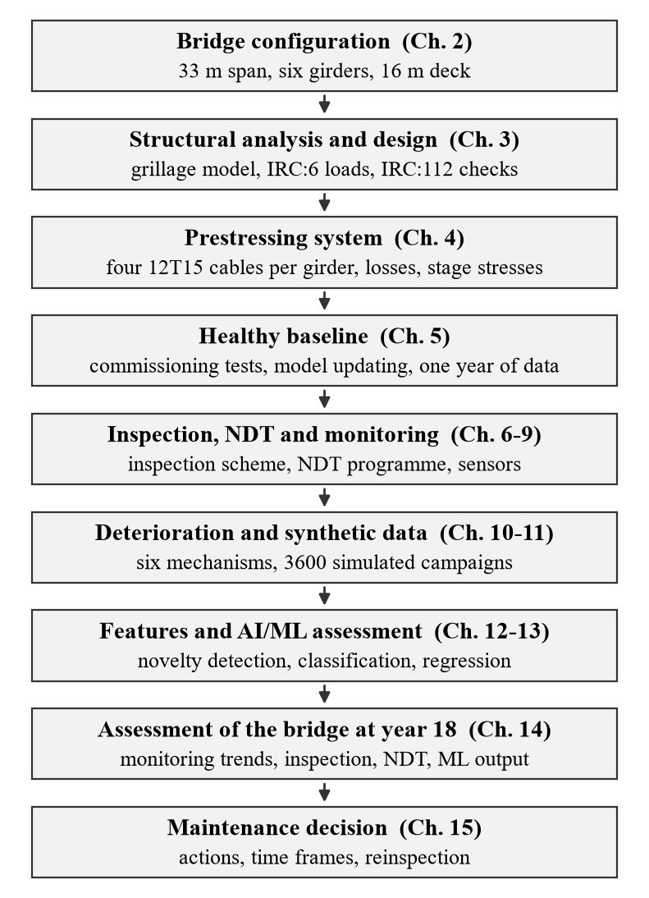
No site is specified in the problem, so I assumed one to make the later choices definite. B33 carries a one-way, three-lane carriageway of a divided state highway (one of two parallel bridges) over an irrigation canal and a service road in the coastal plain of West Bengal, about 120 km from the Bay of Bengal. It has three simply supported spans of 33 m on wall-type piers P1 and P2 and abutments A1 and A2. Only one span length is used; span S2, between the two piers, is the span that is designed, instrumented and assessed in detail.
The effective bridge temperature varies between about 15 and 42 °C. The monsoon brings heavy rain from June to September and the deck goes through wetting and drying for the rest of the year. The exposure has therefore been taken as severe in the IRC:112 classification, with a clear cover of 50 mm to the links and 75 mm to the ducts. The design life is 100 years. Traffic is mixed, with a high proportion of loaded three-axle and multi-axle lorries.
The piers, abutments and foundations are outside the scope of the design and appear only in the inspection scheme. Scour, seismic and wind design and the shop drawings of the prestressing system are also not covered.
| Document | Used for |
|---|---|
| IRC:5-2015 | carriageway, footpath and kerb widths |
| IRC:6-2017 | dead loads, Class A and Class 70R vehicles, impact, footway loading, multi-lane reduction, temperature, load combinations |
| IRC:112-2020 | materials, prestress losses, stress limits, crack control, flexure and shear at the ultimate limit state, deflection |
| IRC:83 (Part II)-2018 | laminated elastomeric bearings |
| IRC:SP:69-2011 | expansion joints |
| IRC:SP:51-2015 | load testing of bridges |
| IRC:SP:35-1990, IRC:SP:52-1999 | inspection and maintenance practice |
| IRC:SP:40-2019, IRC:SP:80-2008 | repair and strengthening techniques; corrosion monitoring and remedial measures |
| IS 516 (Part 5), ASTM C876 | ultrasonic pulse velocity and rebound hammer tests; half-cell potential |
I did all the calculations with Python programs written for this study, using only the numpy, scipy and matplotlib libraries. The machine-learning methods (random forest, logistic regression, Gaussian-process regression, k-means, Gaussian mixture and the Mahalanobis novelty detector) were also coded directly with numpy and scipy, because I could not install the usual library (scikit-learn) on my computer. Appendix A lists the program files.
The carriageway is 11.0 m wide, which provides three lanes of 3.5 m and marginal strips of 0.25 m. It is bounded on each side by a 0.5 m New Jersey type crash barrier. Outside each barrier there is a 1.75 m footpath and a 0.25 m railing kerb, so that the overall width of the deck is 16.0 m (Figure 2). The footpath is slightly wider than the minimum of 1.5 m in IRC:5 because it also carries ducts for power and optical-fibre cables. Placing the barrier between the traffic and the footpath protects pedestrians on a road used by fast heavy vehicles and keeps vehicles off the deck cantilever.
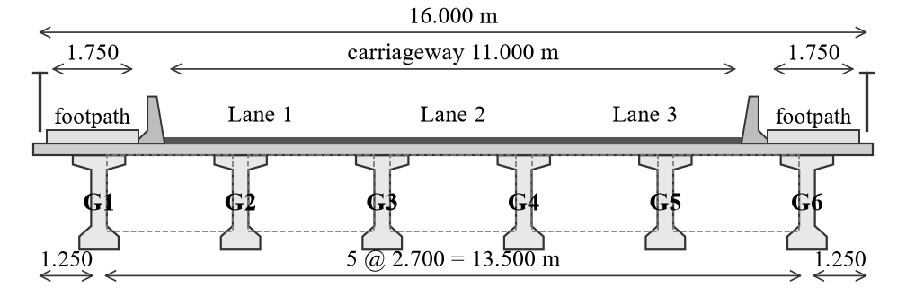
The construction depth is limited, because the deck has to clear the service road below and the approach embankments are already high. The depth of the precast girder was therefore fixed at 1.80 m, i.e. 2.025 m with the slab and a span-to-depth ratio of 16.3. With the depth fixed, the number of girders decides how much prestress each girder has to carry. Table 2 compares four, five and six girders on a preliminary basis: Courbon's distribution, the same section shape, and the prestress needed for zero tension at the soffit under the characteristic load combination.
| Girders | Spacing (m) | Slab (mm) | Courbon factor, outer girder | LL moment, outer girder (kN m) | Pe needed (MN) | Strands per girder | 12T15 cables | Mass of one girder (t) | Concrete in deck (m³) |
|---|---|---|---|---|---|---|---|---|---|
| 4 | 4.00 | 275 | 0.368 | 3618 | 9.67 | 63.5 | 6 (too many) | 83 | 279 |
| 5 | 3.25 | 250 | 0.297 | 2918 | 8.04 | 52.8 | 5 (too many) | 81 | 294 |
| 6 | 2.70 | 225 | 0.250 | 2457 | 6.78 | 44.5 | 4 | 77 | 304 |
With four girders each girder would need about 64 strands, i.e. six 12T15 cables. Six ducts cannot be placed in a 750 mm bottom bulb with the required spacing and cover, and the deck slab would have to span 3.0 m between the flanges. Five girders need about 53 strands, or five cables, which is still too many for the bulb at this depth. Six girders need about 45 strands, which four 12T15 cables (48 strands) provide. The six-girder arrangement uses about 5 % more strand and 9 % more concrete than four girders, but it works within the depth limit, allows a 225 mm slab with a clear span of 1.7 m and a cantilever of 1.25 m, keeps each girder below 80 t for lifting by two cranes, and provides more load paths if one girder is damaged. I therefore adopted six girders at 2.70 m. The last point also has a consequence for monitoring: a deck with six girders sheds load from a weakened girder to its neighbours, which keeps it safe but also makes local damage harder to detect from global measurements.
The precast girder (Figure 3) has a 1000 × 175 mm top flange with a 100 mm taper, a 300 mm web and a 750 × 250 mm bottom bulb with a 200 mm taper. I chose a 300 mm web instead of the usual 250 mm so that a 92 mm HDPE duct can pass through it with enough cover. The bulb width is set by three ducts side by side at a clear spacing larger than the duct diameter. Over 1.5 m at each end the web is widened to the full bulb width (end block) and then tapers back over a further 1.5 m, to hold the four anchorages and resist the high shear near the bearings.
The section properties are A = 0.855 m², yb = 0.912 m and I = 0.3272 m4 for the precast girder, and I = 0.6711 m4 (outer) and 0.6790 m4 (inner) for the composite girder, with the M40 slab transformed by the modular ratio m = 0.971. For a 33 m span the effective-width rule of IRC:112 gives more than the girder spacing, so the full slab width between girders is effective.
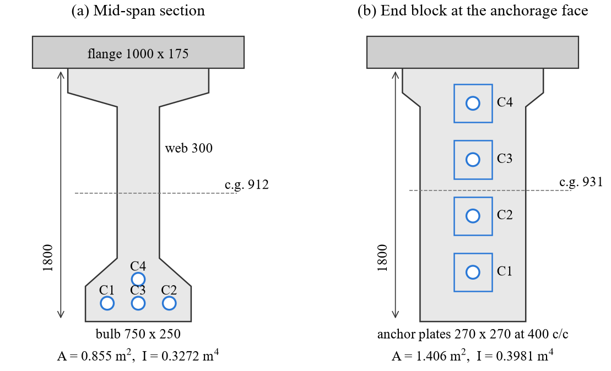
The deck slab is 225 mm thick and spans 1.7 m between the girder flanges; it was checked separately for the wheel loads of the 70R vehicle. End diaphragms 400 mm wide and 1600 mm deep hold the girder ends, transfer transverse loads to the bearings and serve as jacking beams when the bearings have to be replaced. For the intermediate cross girders, one cross girder at mid-span was compared in the grillage model with three cross girders at the quarter points. The two additional cross girders reduced the live-load moment of the outer girder by about 5 % but increased those of the inner girders by about 2 %, and their own weight adds about 215 kN m to the mid-span moment of an inner girder. Since one girder design is used for all six girders, the governing ultimate moment would have increased by about 2 %, while the first two natural frequencies changed by only 1 to 1.5 %. A single 300 × 1450 mm cross girder at mid-span was therefore adopted. It also braces the girders laterally while the deck slab is cast.
Each girder rests on a 400 × 500 mm laminated elastomeric bearing at both ends, with five internal elastomer layers of 12 mm. With elastomeric bearings at both ends the span expands about its centre and both ends move. Strip-seal expansion joints (IRC:SP:69) with a 40 mm gap are provided at each pier and abutment. The joint at a pier is the place where water can reach the bearings, the girder ends and the anchorages, and it becomes the central issue of the assessment in Chapter 14.
| Item | Specification |
|---|---|
| Precast girders | M45; first cables stressed at 36 MPa (about 10 days) |
| Deck slab, cross girders, diaphragms | M40 |
| Reinforcement | Fe500D |
| Prestressing steel | 15.2 mm seven-wire low-relaxation strand (IS 14268, Class 2), fpk = 1860 MPa, 140 mm², Ep = 195 GPa |
| Ducts | corrugated HDPE, 92 mm outer diameter |
| Unit weights (IRC:6) | 25 kN/m³ for concrete, 22 kN/m³ for the 75 mm bituminous wearing coat |
| Load | Value | Basis |
|---|---|---|
| Self-weight of girder | 21.4 kN/m (end block 35.2 kN/m) | carried by the precast girder |
| Wet deck slab, cross girder | 15.2 kN/m per inner girder, 14.6 kN/m per outer girder; cross girder 26.1 kN at mid-span | carried by the precast girders, tributary widths |
| Crash barrier, footpath, railing | 7.3, 6.0 and 1.5 kN/m on each side | composite deck (grillage) |
| Wearing coat | 1.65 kN/m² over 11.0 m | 75 mm at 22 kN/m³ |
| Footway live load | 2.78 kN/m² | IRC:6, Eq. (1) |
| Vehicles | Class A train; Class 70R wheeled (1000 kN) and tracked (700 kN) | IRC:6; three lanes: one 70R and one Class A, or three Class A |
| Impact factor | 0.115 for Class A and 70R wheeled; 0.10 for 70R tracked | IRC:6, Eq. (2) |
| Multi-lane reduction | 10 % when three lanes are loaded | IRC:6 |
| Temperature difference | positive 17.8 / 4.0 / 2.1 °C; reverse 10.6 / 0.7 / 0.8 / 6.6 °C | IRC:6 profiles, α = 12 × 10-6 /°C |
| Differential shrinkage | 100 × 10-6 between deck and girder; creep factor 0.43 | self-equilibrating stresses only |
The footway load for spans above 30 m and the impact factor for spans above 12 m were taken from IRC:6 as
where P = 400 kg/m², W = 1.75 m is the width of the footway and L = 33 m. This gives P' = 283 kg/m² (2.78 kN/m²) and an impact factor of 0.115.
The load combinations follow Annex B of IRC:6. For the ultimate limit state the partial factors are 1.35 on self-weight and superimposed dead load, 1.75 on the wearing coat and 1.5 on traffic. For the serviceability checks the rare (characteristic) combination uses factors of 1.0 on live load and 0.6 on temperature, the frequent combination 0.75 and 0.5, and the quasi-permanent combination zero live load and 0.5 on temperature.
The composite deck was analysed with a grillage of six longitudinal members along the girder lines, with the properties of the composite girders, and transverse members every 1.375 m representing strips of the deck slab. Following Hambly (1991), the slab strips were given I = bt³/12 and a torsion constant J = bt³/6, and they were replaced by T-beams at the cross girders. Each node has a vertical displacement and two rotations. The torsion constant of a girder was taken as the sum of the values for its flange, web and bulb, plus half the slab contribution. The bearings were modelled as vertical springs of 1.6 × 106 kN/m. A load between girder lines was shared between the four surrounding nodes, and a load outside the outer girders (barrier, footpath) was applied as a force and a torque on the outer girder line.
For live load, influence surfaces of bending moment and shear were calculated at 13 sections of each girder. Each vehicle was moved along the span in steps of 0.25 m and across the carriageway in steps of 0.05 m. The worst transverse arrangement of vehicles was found by a search that respects the IRC clearances: 1.2 m from the kerb for the 70R vehicle, 0.15 m for Class A, and 1.2 m between vehicles. The self-weight of the girders and of the wet slab acts on each precast girder separately and was calculated as for a simply supported beam with 0.45 m overhangs.
As an independent check, the live-load share of the outer girder was also calculated by Courbon's method, which assumes a rigid cross-section in the transverse direction:
where n = 6 is the number of girders, xi the distance of girder i from the deck centreline and e the eccentricity of the resultant vehicle load (1.57 m for a 70R vehicle at the kerb clearance with a Class A train beside it).
With a uniform load of 10 kN/m on each girder, the sum of the mid-span moments of the grillage is within 0.3 % of wL²/8, and the deflection of an inner girder is within 0.2 % of 5wL4/384EI plus the compression of the bearings. For live load, Courbon's method is applicable here (span/width = 2.06, stiff cross girders) and gives 2457 kN m for G1, against 2426 kN m from the grillage (Figure 4). For the inner girders the grillage gives larger moments than Courbon's method, because a vehicle near the centre of the deck loads G3 and G4 more than a rigid deck would. The grillage values were used for design.
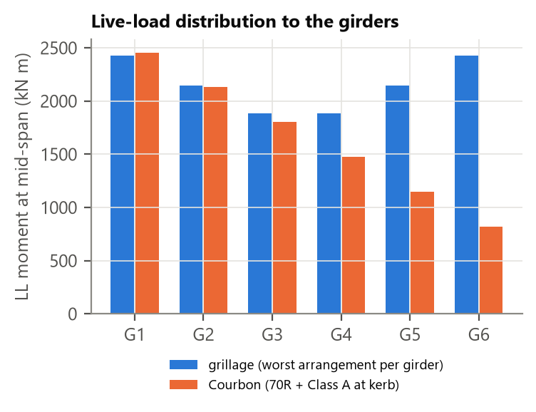
| Mid-span moment (kN m) | G1 (outer) | G2 | G3 |
|---|---|---|---|
| Self-weight of girder | 2930 | 2930 | 2930 |
| Deck slab and cross girder | 2097 | 2281 | 2281 |
| Crash barrier, footpath, railing | 628 | 716 | 667 |
| Wearing coat | 420 | 400 | 413 |
| Vehicles with impact, and footway load | 2719 | 2419 | 2098 |
| Ultimate design moment MEd | 12,446 | 12,329 | 11,805 |
For G1 the worst case is a 70R wheeled vehicle at the kerb clearance with a Class A train beside it; for the inner girders it is the same pair of vehicles placed over them. The outer girder has the largest live-load moment, while the inner girders carry more slab weight. In the end the ultimate moments of G1 and G2 differ by less than 1 %, so a single girder design was used for all six girders. The envelopes for G1 are shown in Figure 5.
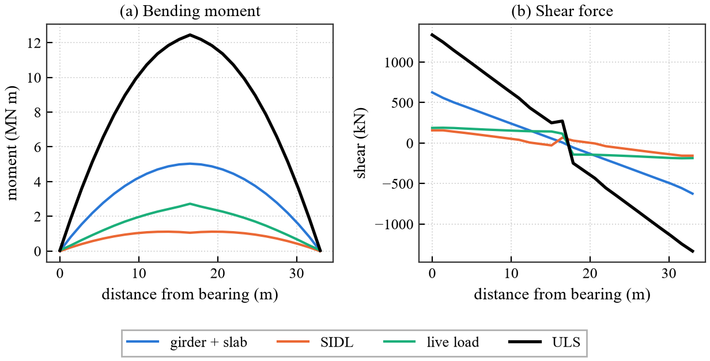
Each girder has four cables of twelve 15.2 mm strands (12T15, Ap = 1680 mm² per cable) in 92 mm corrugated HDPE ducts. The cables are stressed from both ends to 0.75 fpk = 1395 MPa, i.e. 2344 kN per cable. This is below the maximum allowed by IRC:112 and also below the value of 0.765 fpk used in earlier practice, which leaves some room for over-stressing if the friction on site turns out to be higher than assumed.
The cable layout was fixed by checking the position of every duct along the whole girder, not only at mid-span. At the anchorage face the four anchor plates are placed one above the other in the plane of the web, at 0.35, 0.75, 1.15 and 1.55 m above the soffit and 400 mm apart. The centroid of the group (0.95 m) then coincides with the centroid of the end block (0.93 m). At mid-span three cables lie in the bottom row at 130 mm and one in a second row at 300 mm (Figures 3 and 6).
The two outer cables of the bottom row also have to move sideways by 220 mm, which is not possible inside a 300 mm web. In my first layout these cables moved sideways while they were still in the web; this was found when the cover to the ducts was checked along the girder. In the final layout these two cables drop into the bulb within the first 5 and 8 m (parabolas ending at those points) and move sideways only once they are inside the bulb. The two centre cables follow parabolas over the full half-length and stay in the plane of the web. Each profile is a parabola from the anchorage with a horizontal tangent where it reaches its mid-span level, and is straight beyond that point. An allowance of 12 mm was made for the strands lying low in a draped duct.
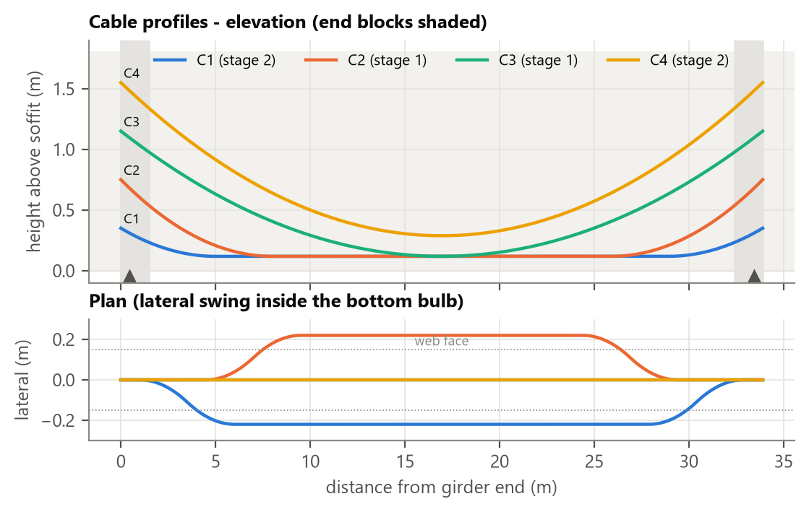
If all four cables were stressed at 10 days, the soffit compression at mid-span would be about 18.6 MPa, against an allowable value of 0.48 fcj = 17.3 MPa at that age. The cables are therefore stressed in two stages: C2 and C3 at 10 days, which is enough to lift the girder off the casting bed and carry its own weight, and C1 and C4 at 28 days. Both pairs have their centroid at the centroid of the end block, so the girder ends are not bent at either stage.
The force after friction at a distance x from the nearer anchorage is
where θ is the cumulative vertical and horizontal angle change of the cable from the anchorage, μ = 0.17 and k = 0.002 /m for HDPE ducts. The draw-in of 6 mm at the anchorage affects a length ls found from the condition that the area between the force profiles before and after the slip equals the slip times the axial stiffness of the cable:
The loss due to elastic shortening was calculated cable by cable in the order of stressing (C2, C3, C1, C4), using the modulus of the concrete at the age of each stressing. When cable i is stressed, every cable j already anchored loses
The long-term loss due to creep, shrinkage and relaxation was obtained from the expression given in IRC:112 (of the same form as Eq. 5.46 of EN 1992-1-1):
The creep coefficient and the shrinkage strain were calculated from the expressions in Annex A2 of IRC:112 for a relative humidity of 70 %, a notional size of 281 mm and a cylinder strength taken as 0.8 times the cube strength. The quasi-permanent concrete stress at the level of the tendons is 10.8 MPa at mid-span. The final relaxation was taken as three times the 1000-hour value for the actual initial stress ratio. The results at mid-span are given in Table 6.
| Cable | Stressed at (days) | Pj (kN) | Friction + draw-in (kN) | Elastic shortening (kN) | P0 (kN) | φ(∞, t0) | Relaxation (MPa) | Long-term loss (MPa) | Pe (kN) |
|---|---|---|---|---|---|---|---|---|---|
| C1 | 28 | 2344 | 179 | 57 | 2107 | 1.63 | 80 | 170 | 1821 |
| C2 | 10 | 2344 | 202 | 191 | 1951 | 1.99 | 47 | 168 | 1668 |
| C3 | 10 | 2344 | 124 | 122 | 2098 | 1.99 | 78 | 187 | 1784 |
| C4 | 28 | 2344 | 134 | 0 | 2210 | 1.63 | 104 | 186 | 1898 |
| Total | 9374 | 639 | 370 | 8366 | 7172 |
The immediate loss at mid-span is 10.8 % and the long-term loss a further 12.7 %, which gives P0 = 8.37 MN, Pe = 7.17 MN and Pe/Pj = 0.765. A total loss in the low twenties of per cent is normal for a post-tensioned girder of this length, so I took this as a first check on the calculation. Cable C2 loses the most to elastic shortening because three cables are stressed after it. Figure 7 shows the force along the girder; the draw-in of the cables with straight central portions extends almost to mid-span because the only friction there is the wobble term.
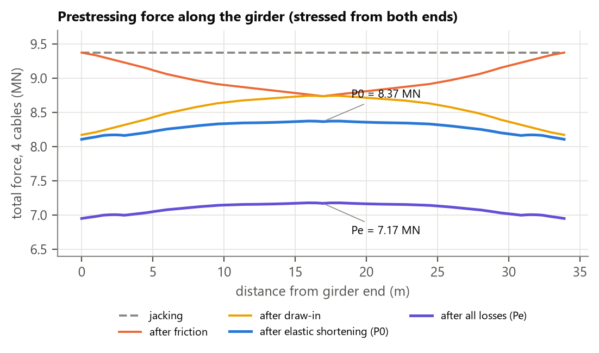
The stresses were checked at mid-span, at L/4 and at two sections near the support of every girder, for five stages: transfer of the first two cables (10 days, self-weight only), all cables stressed (28 days), casting of the deck slab (60 days), opening to traffic (90 days) and long-term service in the three load combinations. The stress at the soffit, for example, is
with compression taken as positive, Zb and Zb,c the section moduli of the precast and composite sections, ψ the combination factor on live load, and σT and σsh the self-equilibrating stresses from the temperature difference and differential shrinkage, added only where they are adverse. For the service checks the characteristic value of the prestress was used: 0.9Pm where prestress is favourable and 1.1Pm where it is not.
The design criteria adopted are stricter than the crack-width limits of IRC:112 for bonded prestressed members: no decompression of the soffit under the quasi-permanent combination, soffit tension below fctm (uncracked section) under the rare combination, and compression below 0.48 fck under the rare and 0.36 fck under the quasi-permanent combination.
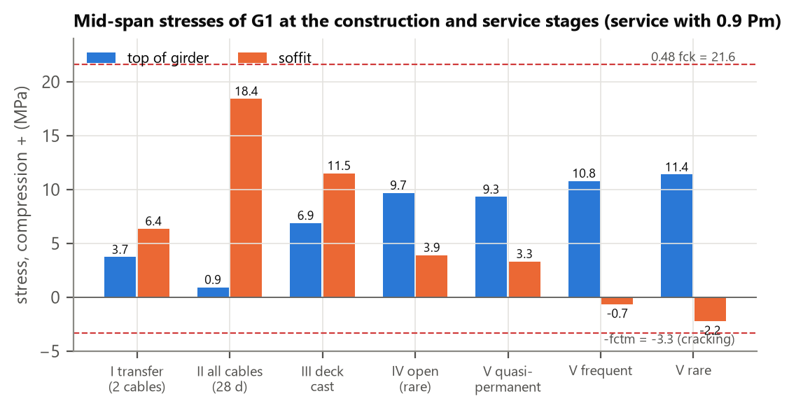
| Check (worst of G1 to G3 and of all sections) | Value (MPa) | Limit (MPa) | Result |
|---|---|---|---|
| Transfer, first stage: maximum compression / minimum stress | 6.79 / +2.39 | 17.28 / ≥ 0 | satisfied |
| All cables stressed: soffit compression | 18.42 | 21.60 | satisfied |
| All cables stressed: top fibre | +0.92 | ≥ 0 (no tension) | satisfied |
| Long term, quasi-permanent, soffit (0.9Pm) | +2.68 | ≥ 0 (no decompression) | satisfied |
| Long term, frequent, soffit (0.9Pm) | -0.85 | ≥ −3.3 (uncracked) | satisfied |
| Long term, rare, soffit (0.9Pm) | -2.27 | ≥ −3.3 (uncracked) | satisfied |
| Rare: top of girder / top of slab (0.9Pm) | 11.64 / 6.48 | 21.6 / 19.2 | satisfied |
| Quasi-permanent: soffit compression (1.1Pm) | 8.76 | 16.2 | satisfied |
The governing check is the soffit stress at mid-span under the rare combination, -2.27 MPa. The reverse temperature difference alone contributes about 1.5 MPa of tension at the soffit, so the girder would not meet a 'no tension under rare loads' rule; it does, however, remain uncracked with a margin of about 1 MPa. I kept this margin in view because it decides how much prestress the girder can lose before it cracks (Chapter 10).
The moment of resistance at mid-span was found by strain compatibility, with a rectangular stress block of depth 0.8x at fcd = 0.67 fck/1.5 and a bilinear stress-strain curve for the strand with fpd = fp0.1k/1.15, starting from the strain due to Pe. When the neutral axis lies within the slab of effective width b,
For G1 this gives x = 252 mm (stress block 201 mm deep, within the 225 mm slab), a strand strain of 28 × 10-3 (the strands yield and the failure is ductile, x/d = 0.14) and MRd = 16,468 kN m, against MEd = 12,446 kN m. The utilisation is 0.76. The untensioned bottom reinforcement was neglected, which is conservative.
The critical section for shear is where the web has just narrowed to 300 mm, 2.75 m from the bearing. Since a duct runs through the web there, the nominal web width is bw − 1.2φ = 190 mm for HDPE ducts. For the worst girder, G3, VEd = 1452 kN, the vertical component of the prestress (0.9Pe sinα) is 532 kN, and the net shear of 921 kN is below VRd,max = 1329 kN for a strut inclination with cotθ = 2. The required shear reinforcement is 771 mm²/m. Two-legged 12 mm links at 200 mm (1131 mm²/m) were adopted over the end 6 m, and two-legged 10 mm links at 250 mm elsewhere, which is above the minimum of 183 mm²/m.
The live-load deflection with impact is 11.8 mm for G1, or span/2786, well within the limit of span/800 = 41.2 mm. The upward camber is 37 mm when all the cables have been stressed and about 11 mm after the deck slab has been cast. The elastic camber due to Pe alone is 57 mm. This value is used again in Chapter 10, because a loss of prestress shows up as a loss of this camber.
The largest bearing reaction is 1222 kN, at an inner girder, with a permanent reaction of 794 kN. For the 400 × 500 mm bearing with five 12 mm layers the shape factor is 9.0. The total design strain due to compression, shear (a movement of 14 mm from creep, shrinkage and temperature) and rotation is 1.84, below the limit of 7 in IRC:83 (Part II), and the minimum pressure of 4.2 MPa is above 3 MPa, so the bearing will not creep out of position. In service each bearing shears by about 0.192 mm per °C, i.e. αL/2; this is the quantity watched by the bearing displacement transducers (Chapter 8).
The end block was sized for the anchor plates (spacing 400 mm, edge distance 250 mm at the top) and for the bursting forces in the local zones. The final anchorage reinforcement has to follow the approval document of the prestressing system actually used. The deck slab was designed separately for the 70R wheel loads on its 1.7 m clear span; these local designs do not affect the later chapters and are not repeated here.
The healthy baseline cannot simply be taken from the design calculation. A bridge as built always differs somewhat from the design: the concrete is usually stiffer than the code value of the modulus, crash barriers and footpaths add stiffness, and bearings are not ideal. Later measurements have to be compared with the bridge as it was measured when new, and with a model that reproduces those measurements. The baseline was therefore set up in three steps: commissioning tests, updating of the model, and one year of monitoring of the healthy bridge.
Before the bridge was opened, a 30-minute ambient vibration test was recorded at night with all 12 accelerometers, and a static load test was carried out with four 300 kN three-axle lorries (two side by side and two in tandem, centred at mid-span) following the approach of IRC:SP:51. In this study the 'real' bridge is a model in which the concrete modulus is 6 % above Ecm, the crash barriers act with about one-third of their stiffness and the dynamic modulus is 24 % above the static modulus. I did not use these values anywhere in the assessment.
The commissioning record was identified without using any mode shapes from the model, by frequency domain decomposition (FDD; Brincker et al., 2001) of the 12 channels (Figure 9). The cross-spectral matrix of the channels was computed at every frequency line and decomposed by singular value decomposition; peaks of the first singular value were picked, each peak was named after the design-model mode that its singular vector resembled most, and the frequency was refined by fitting a single-degree-of-freedom spectrum around the peak (Section 9.4).
At first I identified the frequencies by filtering the channels with the mode shapes of the design model. This gave f2 = 3.78 Hz, whereas the model-free FDD gave 3.93 Hz. With the first bending and torsion modes only 5 % apart, the design-model shapes let one mode leak into the other. From this I learnt that a model which has not yet been checked against the structure should be used only to name the modes, and not to process the data.
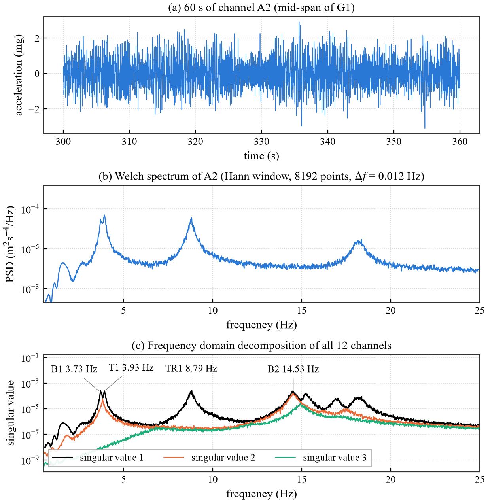
Three parameters of the model were updated: a factor on the concrete modulus (Escale), the share of the crash-barrier stiffness acting with the deck (β) and the ratio of dynamic to static modulus (Edyn). They were found by minimising
over the four identified frequencies fkm and the six measured mid-span deflections δim, with weights equal to the expected measurement errors (0.2 % and 0.10 mm).
| Quantity | Design model | Measured (year 0) | Updated twin |
|---|---|---|---|
| f1, first bending (Hz) | 3.466 | 3.730 | 3.731 |
| f2, first torsion (Hz) | 3.562 | 3.926 | 3.922 |
| f3, first transverse (Hz) | 8.345 | 8.794 | 8.793 |
| f4, second bending (Hz) | 13.168 | 14.530 | 14.540 |
| Load-test deflection G1 / G3 (mm) | 4.99 / 6.90 | 4.36 / 6.32 | 4.40 / 6.34 |
| Escale | 1.00 | – | 1.055 ± 0.008 |
| β | 0 | – | 0.36 ± 0.02 |
| Edyn | 1.20 | – | 1.245 ± 0.010 |
The design model is 5 to 10 % too soft in frequency and 9 to 14 % too flexible in the load test, which is normal for a design model. After updating, the twin reproduces all ten measurements within 0.2 % in frequency and 0.15 mm in deflection, and the measured and twin mode shapes agree with MAC values above 0.99 for the first three modes. The updated parameters are close to the hidden values (1.06, 0.35, 1.24), but I still treat the twin as a calibrated model and not as the true structure, since Escale and β are correlated (correlation coefficient -0.29) and a somewhat different pair could fit almost as well. The second bending mode at 14.5 Hz nearly coincides with the second torsion mode, and its measured shape is a mixture of the two (MAC 0.47); for this mode the twin shape was used in the later signal processing.
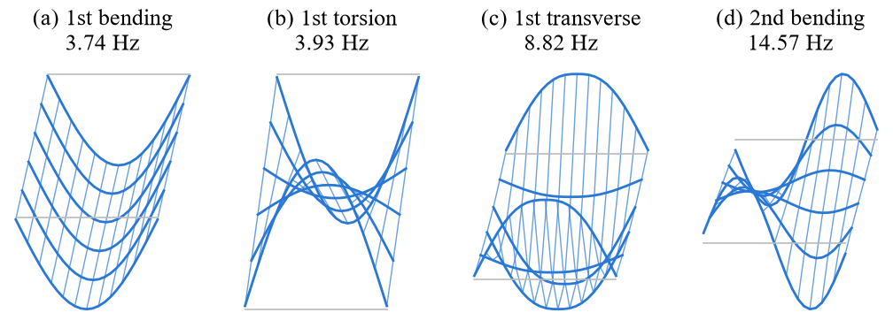
The permanent monitoring system then recorded two 30-minute records a day for a year, at 02:00 and 14:00, giving 730 records. Over the year the first bending frequency varied between 3.65 and 3.79 Hz, a range of almost 4 %. The causes are the temperature (-0.149 %/°C, mainly through the modulus of concrete), the traffic present during the record and the extra mass of a wet deck in the monsoon. Environmental changes of this size are known from other bridges, where they were comparable with or larger than the changes caused by moderate damage (Peeters and De Roeck, 2001; Sohn, 2007). For each frequency a linear model in the temperature T and the logarithm of the RMS acceleration (a measure of how busy the bridge was during the record) was fitted:
After this normalisation the scatter of f1 is 7.0 mHz (0.19 %) (Figure 11). The remaining pattern in the residuals is the effect of the monsoon on the mass. I did not remove it, because on a real bridge its size would not be known in advance.
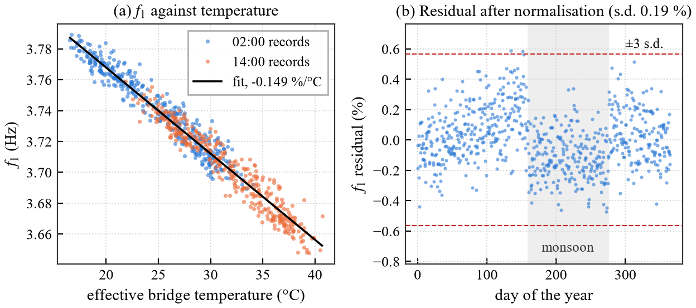
| Baseline quantity (span S2, healthy, reference temperature 25 °C) | Value |
|---|---|
| Effective prestress per girder at mid-span | Pe = 7.17 MN; soffit precompression due to Pe 23.4 MPa |
| Soffit stress, quasi-permanent combination (mean prestress) | about 5.7 MPa compression (G1) |
| Load test (4 × 300 kN): mid-span deflection of G1, G2, G3 | 4.38 / 5.54 / 6.31 mm |
| Load test: soffit strain of G1, G2, G3 | 60 / 70 / 66 με |
| Natural frequencies f1 to f4 | 3.741 / 3.932 / 8.815 / 14.572 Hz |
| Temperature sensitivity of f1 to f4 | -0.15 / -0.14 / -0.14 / -0.13 %/°C |
| Scatter after normalisation, f1 to f4 | 0.19 / 0.17 / 0.16 / 0.16 % |
| Acceleration (RMS at mid-span, peak over all sensors) | RMS 0.6 to 0.8 mg at night and 0.9 to 1.9 mg by day (5 to 95 % of records); median peak 13 mg at night and 18 mg by day, above 50 mg in 27 % of daytime records (heavy lorries) |
| Bearing movement | 0.192 mm/°C at both ends |
| NDT on girders, year 1 (mean ± s.d.) | rebound 42.0 ± 2.2; UPV 4.56 ± 0.07 km/s; cover 53 ± 5 mm; HCP -133 ± 30 mV; resistivity 50 ± 10 kΩcm |
All later measurements are compared with this table and with the normalisation models of Eq. (11), not with the design calculation. The same 'own baseline' principle is also what allows a model trained on simulated data to be applied to the bridge itself (Chapter 12).
Visual inspection is the cheapest source of information about the bridge and, for most of the defects that matter on a bridge of this type (water, corrosion, spalling, bearing and joint problems), also the first. The scheme is organised as Bridge → Span → Component → Location → Observation, so that each record has an address that can be found again at the next inspection.
| Component | Locations recorded | What is looked for |
|---|---|---|
| PSC girders G1 to G6 | zones Z1 to Z5 along the span (Z1 and Z5: end zones 0 to 3.3 m with anchorages and bearings; Z2 and Z4: quarter spans; Z3: mid-span); soffit, web faces, anchorage faces | flexural cracks at the soffit (in a fully prestressed girder any crack wider than a hairline matters), longitudinal cracks along ducts, rust staining, spalling, honeycombing, efflorescence, impact damage over the service road |
| Deck slab | bays between girders, cantilevers, construction joints | cracks, leakage and efflorescence, spalling near drains |
| Cross girders and diaphragms | end diaphragms A and B, cross girder at L/2 | cracks near jacking points, leakage from the joint |
| Bearings | G1-A to G6-B | bulging, splitting, too much or no shear deformation, debris, corrosion of plates, loss of contact |
| Expansion joints | EJ-A1, EJ-P1, EJ-P2, EJ-A2 | torn or missing seal, debris in the gap, water passing through, noise |
| Drainage | spouts U-1 to U-6 and D-1 to D-6 in each span | blockage, spouts too short (water running on the girder), broken pipes |
| Footpaths, crash barriers, wearing coat | upstream and downstream, lanes | loose cover slabs, cracking of barriers, ravelling and potholes near joints |
| Pier caps, piers, abutments | P1, P2, A1, A2 | leakage stains, spalling of pedestals, cracking, vegetation, signs of scour |
Each observation is given a condition state from 1 to 5 using written rules, so that two inspectors arrive at similar ratings (Table 11). Crack-width bands are stricter for prestressed girders than for reinforced concrete elements, because a flexural crack in a girder designed to remain uncracked means that its precompression has been lost. Cracks along bars or ducts in a girder are caused by corrosion rather than by a loss of precompression and are rated with the RC bands.
| Condition state | Meaning | Crack width, PSC girder | Crack width, RC element | Other examples |
|---|---|---|---|---|
| CS1 Good | no repair needed | < 0.05 mm | < 0.10 mm | – |
| CS2 Fair | minor defect, monitor | 0.05 to 0.10 mm | 0.10 to 0.20 mm | efflorescence, minor leakage |
| CS3 Poor | repair at the next opportunity | 0.10 to 0.20 mm | 0.20 to 0.30 mm | spalling without exposed steel, rust staining, leaking joint |
| CS4 Serious | repair soon, check structural effect | 0.20 to 0.30 mm | 0.30 to 1.0 mm | spalling with exposed bars, restrained bearing |
| CS5 Critical | immediate action, possibly restriction | > 0.30 mm | > 1.0 mm | exposed strands over a large area |
A component takes the worst condition state of its observations. A bridge condition index (BCI) between 0 and 100 is then calculated as a weighted average over the component groups,
with weights reflecting the structural importance of each group: 0.30 for the girders, 0.12 each for the deck slab and the bearings, 0.08 each for the joints, piers and pier caps, 0.06 each for the cross girders and abutments, 0.04 for drainage and 0.02 each for footpaths, crash barriers and wearing coat.
| Type | When | Scope |
|---|---|---|
| Routine inspection | before and after every monsoon | walk-over of the deck, view from the service road and the canal banks with binoculars; drains, joints and bearings visible from the piers |
| Principal inspection | every three years | close visual inspection of every element from an under-bridge inspection unit; hammer tapping of suspect concrete; NDT at the fixed test areas |
| Special inspection | after an alarm from the monitoring system, an overload, a flood or a vehicle impact | as needed for the event, by a bridge engineer |
I wrote a small web application for the scheme (inspection_app/index.html; it runs in any browser without an
internet connection). It guides the inspector through span, component, location and observation, suggests the condition state from the
crack width or the type of defect (the inspector can change it), stores photographs, keeps the records in the browser and exports them as
CSV or JSON. It also draws the worst condition state of every girder zone as a map and calculates the component ratings and the bridge
condition index. The year-18 inspection of Chapter 14 is included as an example (Figure 12).
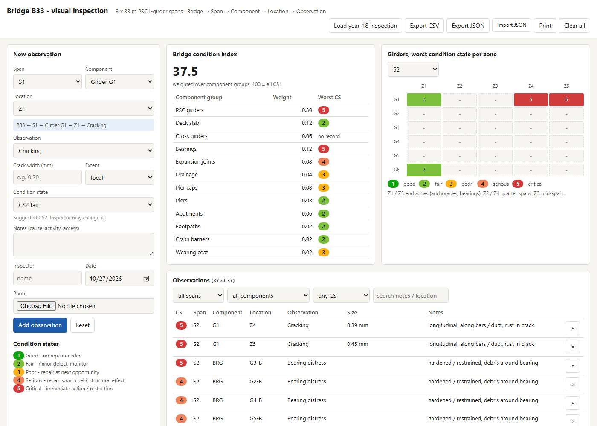
Each test in the NDT programme is chosen to answer a specific question raised by the inspection. The programme for B33 is therefore set out in the order observed defect, engineering question, NDT, measurement, interpretation (Table 13).
| Observed defect | Engineering question | NDT | Measurement | Interpretation |
|---|---|---|---|---|
| Rust staining, spalling, damp patches on the girder soffit | Is the reinforcement corroding, and over what area? | half-cell potential on a 0.5 m grid (ASTM C876); Wenner resistivity | potential (mV vs CSE); resistivity (kΩcm) | below −350 mV corrosion likely, −200 to −350 mV uncertain, above −200 mV low risk; resistivity below 10 kΩcm means fast corrosion is possible. A wet surface also lowers the potential, so both are read together |
| As above, and areas of low cover | Has carbonation reached the steel? Is the cover as specified? | cover meter; phenolphthalein test on drill holes or small cores | cover (mm), carbonation depth (mm) | carbonation depth at or beyond the cover in wet concrete: the steel is no longer passive |
| Cracks, honeycombing, surface deterioration | Is the concrete sound through the section? Where are the voids? | ultrasonic pulse velocity across the web and the bulb (IS 516 Part 5/Sec 1) | pulse velocity (km/s) | above 4.40 km/s good, 3.75 to 4.40 medium, below 3.75 doubtful; a local drop across a crack gives its depth |
| As above | Is the surface concrete weaker? | rebound hammer on a grid (IS 516 Part 5/Sec 4) | rebound number | comparative only; carbonation hardens the surface and raises the rebound; calibrated against a few cores |
| Rust or leakage at anchorages; cracks along ducts | Are the ducts fully grouted? Are strands corroding inside? | GPR to locate the ducts; impact-echo along the duct line; borescope through a small drilled hole | duct positions, voids, condition of the strands | voids at duct high points and anchorages are the usual places of strand corrosion; half-cell readings do not see strands inside ducts |
| Sag of a girder; cracks at mid-span | How much prestress is left? | lift-off test at an accessible anchorage, or saw-cut stress release on the soffit with strain gauges | lift-off force (kN); released strain (με) | the only direct measurement of the remaining force; confirms or rejects what the monitoring suggests |
| Bearing distress | Can the bearing still move and rotate? | bearing displacement against temperature; dimensions and visual check | movement per °C (mm/°C) | much less than αL/2 at one end: restrained bearing |
Each girder has five test areas, one in each zone, on the bottom bulb and on the web (on both faces for the outer girders). A span therefore has 30 test areas and the bridge 90. The same areas are used at every inspection so that trends can be followed. Additional half-cell grids and carbonation tests are made at the girder ends next to the joints, under every drain spout of the outer girders, and wherever rust or spalling is found. Investigations of the tendons are limited to the anchorage zones and the high points of the ducts, where grout voids and strand corrosion are most often found (Concrete Society, 2010). In the learning data of Chapter 11 the 30 test areas of S2 enter as span-level summaries (lowest UPV, most negative potential and so on); the 90 test areas of the whole bridge are clustered in Chapter 14.
Three response quantities are monitored: displacement, strain and acceleration. Each of them gives information that the other two do not. Table 14 gives the quantities, the sensors and their locations, the sampling and duration, and how the readings are interpreted. The layout is shown in Figure 13.
| Quantity | Sensor and location | Sampling and duration | Interpretation |
|---|---|---|---|
| Displacement in a load test | LVDTs on a reference frame, or a total station with prisms, at mid-span of all six girders | static readings at each load step; at commissioning and at every principal or special inspection | deflection compared with the baseline after correction to 25 °C; the distribution between girders shows which girder has softened |
| Camber (geometry) | precise levelling points on the kerbs above G1 and G6 and at the deck centreline, at mid-span and supports | once a year, in the same season and at the same time of day | a loss of camber beyond the creep prediction is the clearest sign of loss of prestress (about 1 mm per 1 % loss) |
| Long-term strain | vibrating-wire gauges cast into the bottom bulb at mid-span of G1, G3, G4 and G6, with thermistors | hourly, permanently; daily averages used | drift towards tension beyond the predicted creep and shrinkage means that precompression is being lost (about 12 με per 1 % loss) |
| Strain in a load test | electrical resistance or fibre-optic gauges on the soffit at mid-span | 100 Hz during the load test | local change of stiffness; a sudden increase means a crack is opening |
| Bearing movement | displacement transducers across the bearings of G1 and G6 at both ends | every 10 minutes, permanently | slope of movement against temperature, healthy value 0.192 mm/°C; a decrease at one end with an increase at the other indicates a restrained bearing |
| Temperature | thermistors in the deck slab, web and bulb at mid-span of G1 and G4 | every 10 minutes | effective temperature and gradient, used to normalise all other data |
| Acceleration | 12 vertical accelerometers (Chapter 9) | 100 Hz, two 30-minute records a day | frequencies, mode shapes, damping, response to traffic |
Twelve uniaxial accelerometers measuring the vertical direction are fixed to the soffits of the bottom bulbs (Figure 13): at L/4, L/2 and 3L/4 of both outer girders, at L/2 of the four inner girders, and at L/4 of G3 and 3L/4 of G4. Low-noise force-balance or piezoelectric seismic accelerometers are needed (noise about 2 µg/√Hz including cable and digitiser, range ±0.5 g), because the ambient response at night is only 0.5 to 1 mg RMS; MEMS sensors with a noise of 20 to 25 µg/√Hz would hide the higher modes in noise. Only the vertical direction is measured, since the modes of interest are vertical bending and torsion; the lateral and longitudinal motion of a 33 m span on elastomeric bearings carries little information about the condition of the girders.
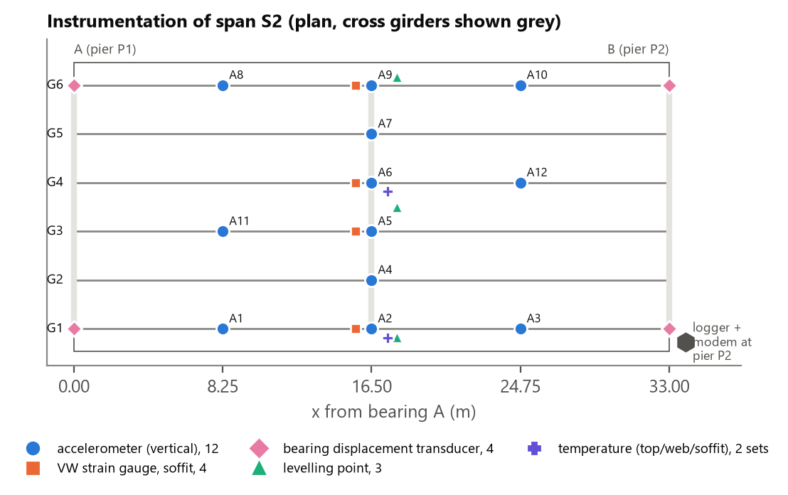
My first layout did not work. With the first ten sensors (three on each outer girder and one at mid-span of each inner girder), the AutoMAC matrix of the twin's mode shapes at the sensor positions showed two pairs of modes that could not be distinguished, with MAC = 1.00 (Figure 14): the second bending mode and the third transverse mode, and the second torsion mode and the second transverse mode. All four modes have no response at mid-span, so only the quarter-point sensors of the outer girders saw them, and there the two modes of each pair had proportional values. The matrix of mode shapes at the sensors was singular (condition number of the order of 1012), so the modes could not be separated. Two additional sensors at the quarter points of the inner girders G3 and G4 reduced the largest off-diagonal MAC to 0.38 and the condition number to 3.1. The modal assurance criterion used throughout is
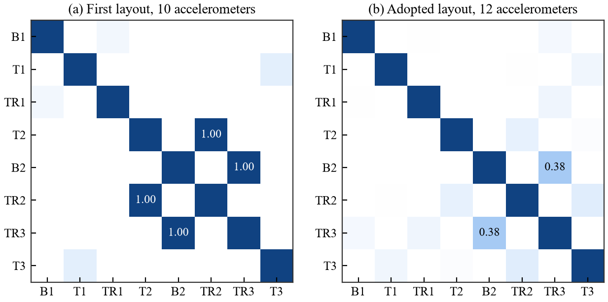
The data loggers sample at 1 kHz with a hardware anti-alias filter and decimate the signals to 100 Hz, so that the modes up to about 20 Hz lie well inside the usable band of 40 Hz. A record lasts 30 minutes, i.e. more than 6000 cycles of the first mode. With 10-minute records the scatter of the identified f1 in my simulations was about ±0.5 %, which is too large compared with the changes to be detected; 30-minute records together with a fitted spectrum reduced it to about 0.15 %. Records are taken at 02:00, when traffic is light and the excitation is closest to broadband, and at 14:00 for the response to traffic.
The ambient excitation comes from wind, ground vibration and above all from traffic. Traffic is not white noise: loaded lorries bounce on their suspensions at about 1.3 to 2.6 Hz and cross at 40 to 60 km/h, and their mass is added to the bridge while they are on it. These effects shift the identified frequencies by up to ±0.2 % depending on how busy the bridge is, which is why aRMS appears in the normalisation of Eq. (11). A drop-weight or shaker test is not needed for routine monitoring but could be used in a special investigation to measure damping or mode shapes more accurately.
Each record is processed in the sequence a(t) → signal processing → FFT → frequency spectrum → natural frequencies, with two additional steps:
Damping estimated from ambient data is poor; its scatter in my simulations was about ±25 %. I kept it as a feature only to check whether it was of any use for this bridge, and it was not.
In 27 simulated records of the healthy bridge with known frequencies, 15 with night-time and 12 with daytime traffic, the identified first frequency had a scatter of 0.14 % (standard deviation) and was never more than 0.35 % from the true value. The third frequency was identified about 0.2 % high with a scatter of only 0.04 %; a constant offset of this kind does not matter, because every record is processed in the same way and compared with the baseline. These errors include the effect of traffic and are comparable with the residual scatter after normalisation in Table 9. A change of frequency smaller than about 0.5 % can therefore not be detected from a single record, which is why trends over many records are used in Chapter 14.
The type, location and size of the deterioration are left open in the problem, so I selected six mechanisms that are realistic for a post-tensioned girder bridge in a wet coastal climate. For each mechanism I identified a cause on this particular bridge, chose a range of values that can be defended, and set up a physical model for its effect on the structure. I kept the ranges wide, from barely detectable to clearly serious, because the AI/ML models have to learn where detection begins.
| Mechanism | Cause on B33 | Model in the twin | Range and reason |
|---|---|---|---|
| Loss of prestress (PL) | creep, shrinkage and relaxation larger than predicted; grout voids and strand corrosion near anchorages; anchorage slip | ratio η of actual to expected Pe, in one girder (60 % of cases) or in all girders (40 %); no change of uncracked stiffness; cracking and reopening of cracks as described in Section 10.2 | 3 to 35 % of Pe. The uncertainty of the predicted long-term loss alone is about ±30 % of 12.7 %, i.e. 4 % of Pe; the upper end covers badly corroded tendons |
| Concrete deterioration (CD) | poorly compacted or chemically attacked concrete in one girder | reduction dE of the modulus over a 6 to 15 m zone or the whole girder; strength reduced by 0.9dE; voids affecting UPV; faster carbonation | dE = 5 to 30 %; beyond 30 % the girder would show obvious distress |
| Flexural cracking (CR) | a vehicle heavier than the design load | loss ds of flexural stiffness over 4 to 10 m near mid-span in a load test; in ambient vibration only 20 to 50 % of it, since cracks in a prestressed girder close again; residual crack width about 0.1 to 0.35 mm | ds = 15 to 50 % locally, i.e. a few per cent of the stiffness of the girder |
| Corrosion (CO) | water from a leaking joint or a short drain spout on low-cover concrete of an outer girder; carbonation reaches the links, then strands in poorly grouted ducts | loss c of strand area over 2 to 8 m at a joint end or under a spout; local prestress loss equal to c; stiffness loss 0.25c from spalling; wet concrete, low cover, more negative HCP and lower resistivity; rust and spalling visible only after enough rust has formed | c = 2 to 25 %; 80 % of cases on G1 or G6, which carry the drains |
| Bearing deterioration (BR) | ageing of the elastomer and debris from a leaking joint packed around the bearing | shear stiffness of the bearing multiplied by 5 to 500 at one or both ends, Eq. (17) | a bearing locked by debris behaves as several hundred times stiffer in shear; 60 % of cases have a visibly leaking joint |
| Local stiffness loss (LS) | a tall vehicle on the service road striking a fascia girder; internal void or delamination | loss of 15 to 60 % of the flexural stiffness over 1 to 3 m, anywhere between 5 and 28 m | local damage that removes a large part of one section but little of the stiffness of the span; visible in 75 % of cases on outer girders and 40 % on inner girders |
The healthy cases also vary: the age of the bridge (5 to 30 years), the depth of carbonation, which grows with the square root of age, the temperature, the moisture of the deck and the traffic. A campaign contains one mechanism (60 % of campaigns), two mechanisms at the same time (15 %) or none (25 %).
Loss of prestress. In an uncracked girder with bonded tendons the axial prestressing force does not reduce the flexural stiffness (Hamed and Frostig, 2006), so a loss of prestress does not change the natural frequencies or the response to a load test as long as the girder stays uncracked. It does change the camber and the strain in the concrete. For a loss ΔP, the change of level at mid-span and the change of strain at the soffit are
where δPe = 57 mm is the elastic camber due to Pe (Section 4.8), and (1 + χφ) = 1.8 allows for creep under a slowly developing loss. This gives about 1.0 mm of sag and 12 με of tensile strain change per 1 % loss of prestress. The girder cracks when the soffit stress under heavy (not extreme) traffic, taken as 0.8 times the design live load together with 0.6 times the reverse temperature difference, exceeds fctm. Once cracked, a section reopens in a later load test as soon as the soffit is decompressed again, and its stiffness above the decompression moment Mdec follows a Branson-type expression,
Bearing deterioration. In a two-dimensional grillage a horizontal restraint at the level of the bearings cannot be modelled directly. If both ends of a girder are restrained horizontally at a distance e below the neutral axis, a rotation of the ends stretches the soffit and the restraint produces end moments. This was modelled as a rotational spring that couples the two end rotations of each girder,
where kb is the shear stiffness of a bearing and ksub the horizontal stiffness of the pier or abutment. The same series stiffness gives the movement of each bearing per degree of temperature. One consequence is important for monitoring: if only one end is restrained, ks remains small (the other end is still free), the frequencies hardly change, but the free end takes the whole movement, which the bearing transducers see immediately.
Concrete deterioration reduces the modulus in a zone of one girder. In the NDT model the pulse velocity changes with the square root of the dynamic modulus (V ∝ √Ed), so a 20 % loss of modulus lowers the UPV by about 10 %, while the rebound number follows the reduced strength of the surface concrete. Corrosion combines a local loss of strand area, a local loss of prestress and some spalling with the NDT signature described in Table 13. Cracking and local stiffness loss reduce the flexural stiffness of a few elements of one girder.
Before any random data were generated, each mechanism was increased from zero to the upper end of its range on girder G1 (or on all girders where that is the natural case), with all noise switched off. Figure 15 shows what each measurement can and cannot see before any machine learning is involved.
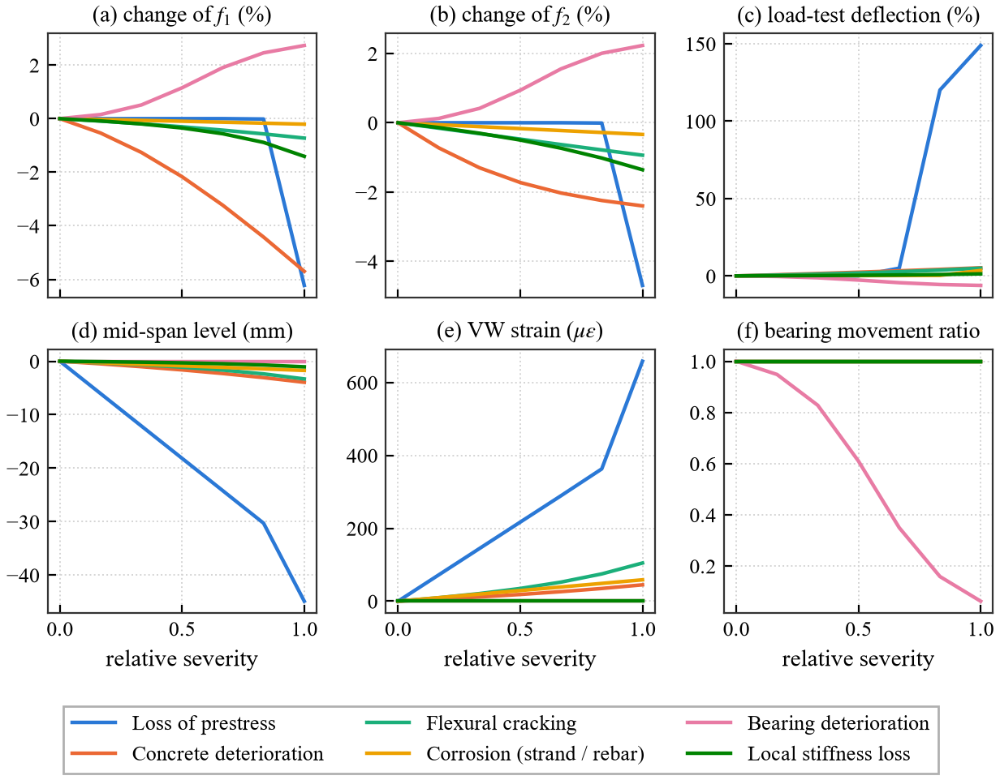
These changes have to be compared with the effect of temperature: a day 10 °C warmer lowers f1 by about 1.5 %, which is about the same as losing 11 % of the modulus over the whole of one girder. As the problem statement also warns, a change in frequency cannot be read directly as a particular type of damage. Figure 15 shows the reason: four mechanisms lower the frequency, one raises it, one leaves it unchanged, and temperature can move it either way.
I produced the synthetic data with the updated twin of Chapter 5 and not with the hidden 'real' model, because in practice only the model of the bridge is available for simulation. Every synthetic campaign goes through the same steps as a real measurement campaign (Table 16).
| Step | What is generated | Variability and noise |
|---|---|---|
| Scenario | 0, 1 or 2 mechanisms of random size and location (Chapter 10) | 25 % healthy, 60 % one mechanism, 15 % two mechanisms |
| Environment | effective bridge temperature from a seasonal and daily model of the site; deck moisture in the monsoon | 14 to 42 °C; mass +0.6 % in the monsoon, ±0.2 % at random |
| Vibration | response of 8 modes to moving lorries (bounce 1.3 to 2.6 Hz, amplitude 2 to 6 %), cars and broadband ambient forces; 12 channels, 30 minutes, 100 Hz | 3 to 60 vehicles per 10 minutes at night, 150 to 420 by day; damping 1.5 ± 0.2 %; sensor noise 2 µg/√Hz |
| Identification | complete processing of Chapter 9 applied to each record | frequencies, MAC, damping, aRMS and amax as identified, not as simulated |
| Load test | four 300 kN lorries; deflection and strain of all six girders | lorry weight ±1 %; 0.05 mm; 3 με |
| Geometry and VW strain | change beyond the healthy creep prediction | creep model error 2.5 mm and 25 με (common to all girders); instrument error 0.8 mm and 3 με |
| Bearings | movement per °C at both ends | ±0.012 mm/°C |
| NDT | 30 test areas of span S2: rebound, UPV, cover, HCP, resistivity, carbonation, chloride | scatter of strength, cover and carbonation rate in the structure; reading errors of each test |
| Visual inspection | observations with size and condition state | hairline cracks often missed (probability of detection 1 − e−w/0.06); condition state wrong by one for 15 % of entries; early defects often not visible |
In total 3600 campaigns were generated: 902 healthy, about 362 for each
single mechanism and 521 with two mechanisms. Each campaign contains 51 measured quantities and its true labels, and the data are
stored in out/data/library.csv. Some examples are given below.
| Condition (all girders) | Deflection G1 (mm) | Deflection G3 (mm) | Strain G1 (με) | Level change (mm) | VW change (με) | f1 (Hz) |
|---|---|---|---|---|---|---|
| Healthy | 4.38 | 6.31 | 60 | +0.0 | +0 | 3.741 |
| Prestress loss 20 % | 4.38 | 6.31 | 60 | -20.8 | +248 | 3.741 |
| Prestress loss 27 % | 9.29 | 11.44 | 183 | -28.0 | +335 | 3.741 |
| Prestress loss 33 % | 12.05 | 14.18 | 194 | -38.1 | +529 | 3.634 |
Table 17 shows the result of Chapter 10 in numbers: up to 20 % loss the load test and the frequency show nothing, whereas the level and the VW strain have already changed by about 21 mm and 250 με. Once the girders crack (27 %) the load-test deflection increases sharply.
| Location | Rebound number | UPV (km/s) | Cover (mm) | Carbonation (mm) | HCP (mV) | Resistivity (kΩcm) | Chloride (% of cement) | Cluster (Ch. 14) |
|---|---|---|---|---|---|---|---|---|
| S2-G1-Z1 | 45 | 4.50 | 51 | 16 | -241 | 18 | 0.09 | wet / corrosion risk |
| S2-G1-Z2 | 43 | 4.52 | 53 | 12 | -135 | 42 | 0.07 | sound / dry |
| S2-G1-Z3 | 40 | 4.57 | 61 | 11 | -149 | 37 | 0.04 | sound / dry |
| S2-G1-Z4 | 40 | 4.41 | 31 | 14 | -456 | 12 | 0.16 | wet / corrosion risk |
| S2-G1-Z5 | 42 | 4.38 | 40 | 12 | -436 | 11 | 0.15 | wet / corrosion risk |
Along G1 the readings change towards the joint end (Z4 and Z5): the resistivity drops and the potentials become more negative where the concrete is wet, the cover is well below the specified 50 mm, and the chloride content is more than twice that of the dry zones. Neither the carbonation front (12 to 14 mm) nor the chloride content (about 0.15 % of the cement mass, below the usual threshold of 0.2 to 0.4 %) would explain active corrosion on its own, so the low potentials have to be confirmed with cores taken at the depth of the steel before the repair (Section 15.3). UPV and rebound are hardly affected, because the concrete itself is sound.
| Mode | Healthy (Hz) | Concrete deterioration, G1, −20 % E (Hz) | Bearings restrained at both ends, ×100 (Hz) | Temperature +10 °C (Hz) |
|---|---|---|---|---|
| f1, bending | 3.741 | 3.620 (-3.2 %) | 3.823 (+2.2 %) | 3.685 (-1.5 %) |
| f2, torsion | 3.932 | 3.852 (-2.0 %) | 4.002 (+1.8 %) | 3.873 (-1.5 %) |
| f3, transverse | 8.815 | 8.770 (-0.5 %) | 8.852 (+0.4 %) | 8.684 (-1.5 %) |
The example in the problem statement changes f1 from 3.20 to 3.05 Hz, i.e. by −4.7 %. Since the frequency varies with √EI, a change of that size on B33 would need a loss of about 9 % of the bending stiffness of the whole deck, or simply a temperature rise of about 30 °C. Of the chosen mechanisms only two reach it, and only near the upper ends of their ranges: concrete deterioration over the whole of one girder (−5.7 % at 30 %) and the largest losses of prestress, at which the girders have cracked (−6.2 % at 35 %). The frequency alone cannot tell these apart. The pattern across the modes carries more information: deterioration of G1 lowers f1 more than f2 and f3, bearing restraint raises f1 and f2 but hardly f3, and temperature changes all three by nearly the same percentage. For this reason all four tracked modes are kept as features.
A useful feature should have a physical meaning, respond to at least one mechanism and be stable on the healthy bridge. Each feature used here is expressed as a change from the structure's own healthy baseline: the residual of a frequency after the temperature and traffic model of Eq. (11), the load-test deflection relative to the commissioning test after correction to 25 °C, the levels and VW strains relative to the creep prediction, and the bearing movement relative to αL/2. This is essential because the models are trained on twin data and then applied to the real bridge; an error of 0.5 % in the twin's absolute frequency would otherwise look like damage.
| Group | Features | Physical meaning |
|---|---|---|
| Vibration | change of f1 (%), change of f2 (%), change of f3 (%), change of f4 (%), MAC mode 1, MAC mode 2, mode-1 edge asymmetry, damping mode 1 | global stiffness, mass and boundary conditions; MAC and edge asymmetry show which side of the deck has changed |
| Load test | load-test deflection change (%), deflection asymmetry G1-G6 (%), largest girder deflection change (%), soffit strain change (%), largest girder strain change (%) | static stiffness of each girder under a known load; the asymmetry locates a soft girder |
| Geometry, VW strain | mid-span level change (mm), largest sag of a girder (mm), level asymmetry G1-G6 (mm), VW strain change (µε), largest VW strain change (µε) | permanent deformation: loss of precompression (camber, soffit strain) and creep of a softened girder |
| Bearings | bearing movement ratio, bearing movement A - B (mm/°C) | freedom of the bearings; restraint at one end doubles the movement at the other |
| NDT | lowest UPV (km/s), lowest rebound number, most negative HCP (mV), lowest resistivity (kΩcm), lowest cover (mm), carbonation depth - cover (mm) | condition of the concrete (UPV, rebound) and of the steel (HCP, resistivity, cover against carbonation) |
| Visual inspection | flexural crack width (mm), crack along bars/ducts (mm), spalled area (m²), rust-stain locations, girder condition state, bearing condition state, joint leaking | what the inspector sees: cracks, spalling, rust, bearing and joint distress |
I started from the feature vector suggested in the problem statement, x = [f1, f2, aRMS, δmax, εmax, UPV, rebound number], and changed two of its entries after looking at the data. aRMS and amax depend much more on traffic than on condition (the RMS is about 50 % higher by day than at night, and the peak of a record is set by whichever heavy lorry happens to cross), so they are used to normalise the frequencies rather than as condition features. δmax was replaced by the change of the mean deflection together with the G1–G6 asymmetry, which separate a global from a local change. Figure 16 shows, before any classifier is trained, how strongly each feature reacts to each mechanism, measured as the shift of its mean in units of the healthy standard deviation.
Reading Figure 16 column by column already gives most of the rules an engineer would write: loss of prestress moves the levels and the VW strain; bearing restraint changes the bearing movement ratio, raises f1 and often comes with a leaking joint; corrosion changes the potentials, the resistivity and the cover relative to carbonation; concrete deterioration lowers UPV and rebound and, over a whole girder, the frequencies; cracking and local damage appear in the load test and the inspection. The machine-learning models are useful because they combine these weak and overlapping signals consistently, attach a measure of confidence and estimate the size of the problem. Figure 17 shows the distributions of six of the features.
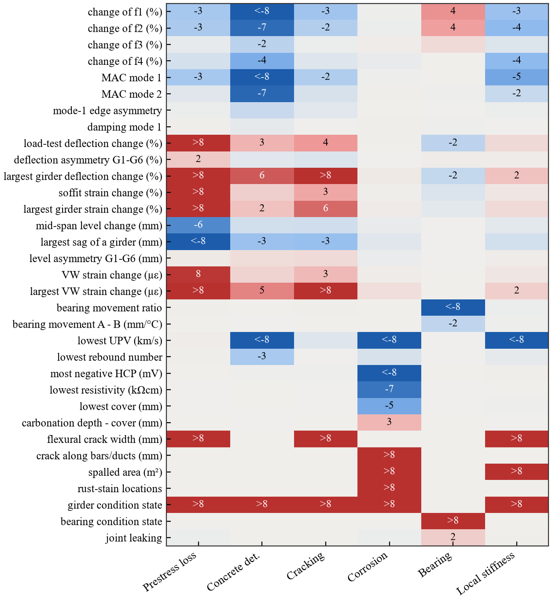
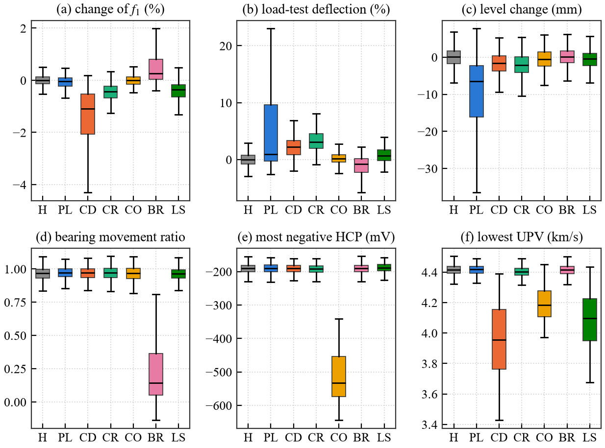
The library was split into a training set (2509 campaigns) and a test set (1091 campaigns), stratified by class; all results below are for the test set. The assessment follows the usual sequence of structural health monitoring (Farrar and Worden, 2013): first decide whether the bridge has changed from its healthy state, then which mechanism is present, how large it is and where it is.
The novelty detector is trained on healthy campaigns only. This matches the situation on a real bridge, which has a healthy baseline but no labelled examples of its own damage. For a standardised feature vector x the squared Mahalanobis distance from the healthy data (Worden et al., 2000) is
where μH and ΣH are the mean and the covariance of the healthy training campaigns. The covariance was shrunk slightly towards its diagonal, and a small value was added to the diagonal so that features which are always zero on a healthy bridge (rust stains, for example) do not make the matrix singular. A campaign is flagged when D² exceeds the 99th percentile of the healthy training values, i.e. the designed false-alarm rate is 1 %.
| Data source | Healthy (false alarm) | Loss of prestress | Concrete deterioration | Flexural cracking | Corrosion | Bearing deterioration | Local stiffness loss |
|---|---|---|---|---|---|---|---|
| Vibration only | 1 % | 12 % | 87 % | 44 % | 2 % | 40 % | 60 % |
| Static + geometry + bearings | 1 % | 85 % | 73 % | 89 % | 14 % | 100 % | 29 % |
| Inspection + NDT | 2 % | 33 % | 92 % | 95 % | 100 % | 85 % | 98 % |
| Continuous monitoring (no lane closure) | 2 % | 79 % | 89 % | 76 % | 12 % | 100 % | 60 % |
| All sources fused | 3 % | 86 % | 96 % | 100 % | 100 % | 100 % | 98 % |
With vibration data alone the detector finds most cases of concrete deterioration (87 %) and local stiffness loss (60 %), fewer bearing cases (40 %, essentially those restrained at both ends), and almost no cases of prestress loss (12 %) or corrosion (2 %). This confirms Figure 15 in the presence of noise and environmental variation: vibration monitoring alone is not suitable for the two mechanisms that most often govern the life of a post-tensioned bridge. Adding levelling, VW strain and bearing movement, which can all be measured without closing the bridge, raises the detection of prestress loss to 79 % and of bearing problems to 100 %. With all sources combined, every mechanism is detected in 86 % or more of the cases at a false-alarm rate of 3 %; the cases that are missed are the smallest ones.
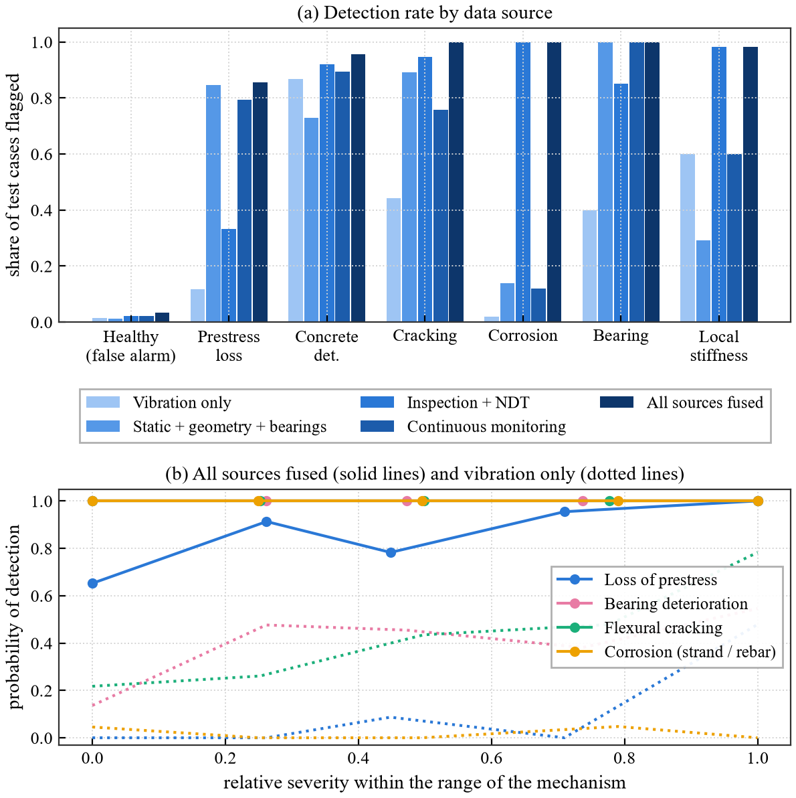
For each mechanism a random forest (Breiman, 2001) of 100 classification trees was trained to answer the question 'is this mechanism present?', so that two mechanisms can be reported at the same time. Each tree is grown on a bootstrap sample of the training data; at each node it tries √p randomly chosen features and selects the split that reduces the Gini impurity the most,
where pk is the share of class k in the node. The probability given by the forest is the average over its trees. The same model was trained on each data source separately and on all of them together; this is the data-fusion study. The models are compared with the area under the ROC curve (AUC) and with the F1 score at a threshold of 0.5,
| Data source | Loss of prestress | Concrete deterioration | Flexural cracking | Corrosion | Bearing deterioration | Local stiffness loss | Macro-F1 |
|---|---|---|---|---|---|---|---|
| Vibration only | 0.57 / 0.04 | 0.92 / 0.66 | 0.85 / 0.29 | 0.57 / 0.00 | 0.82 / 0.54 | 0.81 / 0.42 | 0.32 |
| Static + geometry + bearings | 0.91 / 0.78 | 0.82 / 0.46 | 0.92 / 0.64 | 0.64 / 0.00 | 1.00 / 1.00 | 0.67 / 0.07 | 0.49 |
| Inspection + NDT | 0.73 / 0.29 | 0.97 / 0.84 | 0.97 / 0.87 | 1.00 / 1.00 | 0.97 / 0.93 | 0.99 / 0.86 | 0.80 |
| Continuous monitoring (no lane closure) | 0.87 / 0.76 | 0.93 / 0.67 | 0.89 / 0.46 | 0.65 / 0.00 | 1.00 / 1.00 | 0.83 / 0.40 | 0.55 |
| All sources fused | 0.93 / 0.80 | 0.98 / 0.83 | 1.00 / 0.93 | 1.00 / 1.00 | 1.00 / 1.00 | 0.99 / 0.81 | 0.90 |
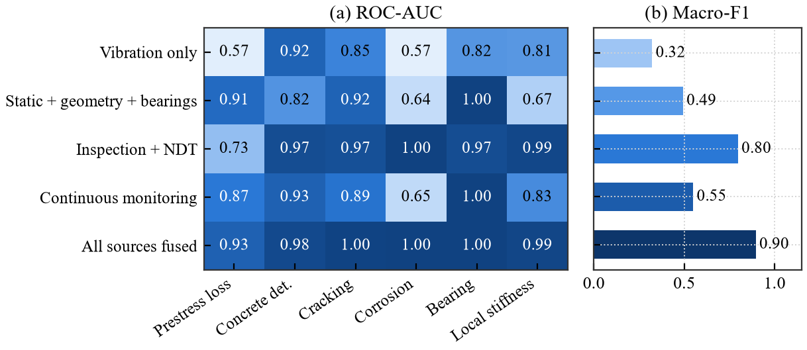
The macro-F1 increases from 0.32 with vibration alone to 0.49 with static, geometric and bearing data, 0.80 with inspection and NDT, and 0.90 with all sources combined. No single source is sufficient, and the sources complement each other in a way that follows the physics: NDT and inspection see corrosion and surface damage, levelling and VW strain see the prestress, the bearing transducers see the bearings, and the load test sees cracking. A logistic regression on the combined features reaches AUC values of 0.88 to 1.00, close to those of the random forest, so the choice of features mattered far more than the choice of algorithm.
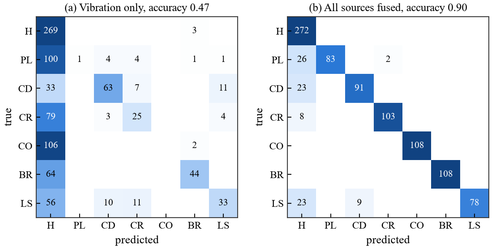
The confusion matrices of Figure 20 show where the errors are. With vibration alone, prestress loss and corrosion are mostly classified as healthy, and cracking, local stiffness loss and concrete deterioration are confused with each other because all three lower the frequencies slightly and differ mainly in where and by how much. With all sources, the remaining errors are small cases of prestress loss, concrete deterioration and local stiffness loss that are classified as healthy, and a few cases of local stiffness loss taken for concrete deterioration; such cases are hard to see by any means.
The size of a loss of prestress decides between continued monitoring and strengthening, so an estimate without its uncertainty is of little use. Gaussian-process regression (Rasmussen and Williams, 2006) gives both. With a squared-exponential covariance function with one length scale per input, the prediction at a new point x* has the mean and variance
where K is the covariance matrix of the training inputs, k* the covariances between the new point and the training points, and σn the noise. The hyper-parameters were found by maximising the marginal likelihood. The inputs are the largest sag of a girder, the mean level change, the largest and mean VW strain changes, the change of load-test deflection and the width of flexural cracks. On the test set the mean absolute error is 2.6 % of Pe (R² = 0.83) and the 95 % band contains the true value in 92 % of the cases, so the stated uncertainty is realistic (Figure 21). A random forest gives a similar error (2.7 %). A purely physical inversion with the sensitivities of Eq. (15) on the worst instrumented girder is less accurate (MAE 6.4 %), mainly because it cannot see losses in G2 and G5, which have no gauges, and because it is disturbed by a second mechanism in the two-mechanism cases. The shortest length scales of the fitted process belong to the load-test deflection change and the largest VW strain change.
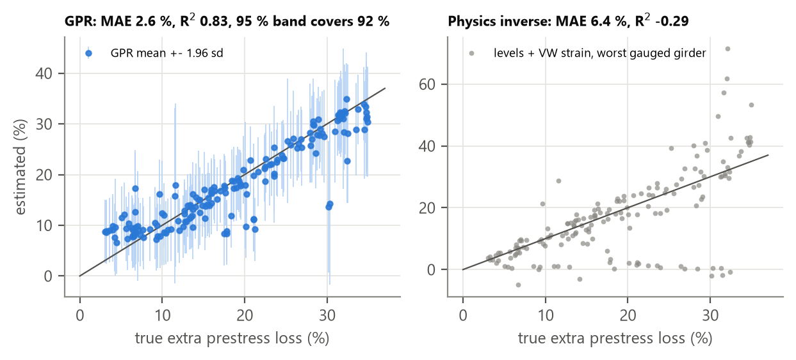
A random forest using the deflections and strains of each girder in the load test, the levels, the VW strains and the asymmetry of the first mode shape identifies the affected girder in 70 % of the single-mechanism test cases (prestress loss 75 %, concrete deterioration 78 %, cracking 88 %, corrosion 46 %, local stiffness loss 64 %). Corrosion is located worst because its effect on the global response is small and often near a support, where the load test is not sensitive; for corrosion the location comes from the NDT grid instead (Chapter 14).
The importance of a feature was measured by permutation: the values of the feature in the test set were shuffled and the resulting drop in AUC was recorded. The importances (Figure 22) agree with the effect sizes of Figure 16 and with the mechanisms of Chapter 10. The model for prestress loss relies on the VW strain and the levels, the bearing model on the bearing movement ratio, the corrosion model on the resistivity and the potentials, and the model for concrete deterioration on the UPV. I treated this agreement as a necessary condition for trusting the models: a model that detected corrosion from the damping of the first mode, for example, would have learnt a peculiarity of the simulation rather than anything about the bridge.
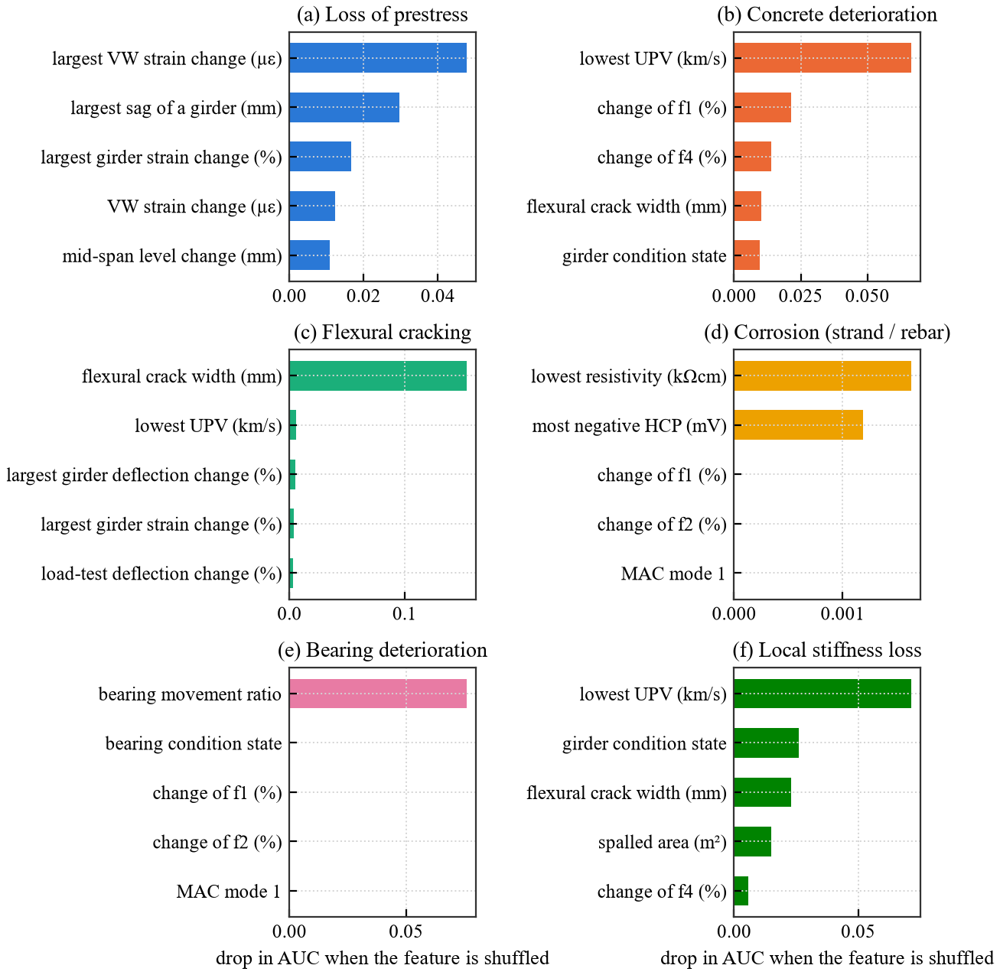
This chapter applies everything above to the bridge itself. The 'real' bridge (the hidden model of Chapter 5) was aged for 18 years with a deterioration history that was not used by the assessment. Monthly monitoring records (night-time vibration, bearing movement, VW strain) and yearly levels were generated for the whole period, and in year 18 a principal inspection with NDT of all spans and a load test were carried out. The assessment uses only these measurements, the baseline of Chapter 5 and the models of Chapter 13.
Each monitored quantity xt was followed with an exponentially weighted moving average,
with λ = 0.2 and L = 3, where μ0 and σ0 are the mean and standard deviation of the first two years. The long-term slope over the last three years was estimated with the Theil–Sen estimator (the median of all pairwise slopes), which is not affected by a few outliers.
| Monitored quantity | First EWMA alarm (year) | Theil–Sen slope over the last 3 years (per year) |
|---|---|---|
| f1 residual | 12.5 | +0.030 |
| f2 residual | 13.2 | +0.039 |
| bearing B movement | 10.5 | -0.009 |
| bearing A movement | 10.6 | +0.004 |
| VW strain G1 | 12.8 | +12.575 |
| level G1 | 12.1 | -1.143 |
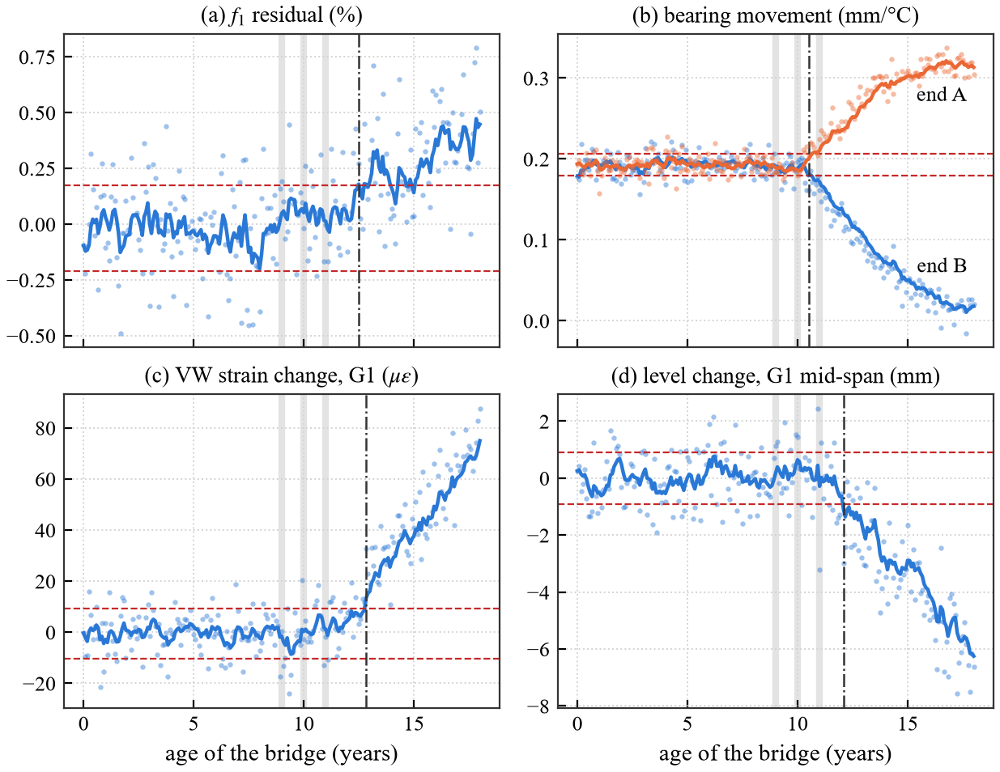
The bearing transducers gave the first and clearest signal, in year 10.5: the movement at end B fell towards zero while that at end A increased, which is the signature of a bearing being locked at one end while the other end takes over the movement. The f1 residual also raised an alarm, in year 12.5, but upwards: the span had become stiffer. On its own this could be mistaken for a sign of good health or for an error in the temperature model; next to the bearing record it is the restraint described in Chapter 10. The level of G1 dropped (alarm in year 12.1) and its VW gauge drifted towards tension (year 12.8), which is the pattern of lost precompression in one girder. The delays after the hidden onsets follow how directly each quantity measures its mechanism: the bearing transducers raised their alarm 0.5 years after the bearings began to lock, the level and the VW strain of G1 1.1 and 1.8 years after the corrosion began, and the frequency residuals, which see the bearings only indirectly, after 2.5 and 3.2 years. With vibration data alone the record would only have said that the bridge had become stiffer.
| Span | Component | Location | Observation | Size | CS | Note |
|---|---|---|---|---|---|---|
| S2 | G1 | Z4 | Cracking | 0.39 mm | 5 | longitudinal, along bars / duct, rust in crack |
| S2 | G1 | Z5 | Cracking | 0.45 mm | 5 | longitudinal, along bars / duct, rust in crack |
| S2 | BRG | G3-B | Bearing distress | 5 | hardened / restrained, debris around bearing | |
| S2 | BRG | G2-B | Bearing distress | 4 | hardened / restrained, debris around bearing | |
| S2 | BRG | G4-B | Bearing distress | 4 | hardened / restrained, debris around bearing | |
| S2 | BRG | G5-B | Bearing distress | 4 | hardened / restrained, debris around bearing | |
| S2 | BRG | G6-B | Bearing distress | 4 | hardened / restrained, debris around bearing | |
| S2 | EJ | EJ-P2 | Leakage | 4 | water and silt onto pier cap | |
| S2 | G1 | Z4 | Spalling | 0.18 m² | 3 | |
| S2 | G1 | Z4 | Leakage | damp patches / efflorescence | 3 | |
| S2 | G1 | Z5 | Corrosion staining | 3 | ||
| S2 | G1 | Z5 | Leakage | damp patches / efflorescence | 3 | |
| S3 | G1 | Z1 | Leakage | damp patches / efflorescence | 3 | |
| S2 | EJ | EJ-P1 | Joint distress | 3 | seal torn, debris packed in gap | |
| S2 | EJ | EJ-P1 | Leakage | 3 | water and silt onto pier cap | |
| S2 | BRG | G1-B | Bearing distress | 3 | hardened / restrained, debris around bearing | |
| S2 | EJ | EJ-P2 | Joint distress | 3 | seal torn, debris packed in gap | |
| S2 | PC | P2 | Leakage | 3 | silt and water stains below S2 end B bearings | |
| S2 | PC | P2 | Spalling | 0.15 m² | 3 | pedestal edge spalled under G1-B |
| S2 | DR | U-6 | Blocked drain | 3 | spout 150 mm long, discharges on G1 | |
| S2 | WC | near EJ-P2 | Surface deterioration | 3 | ravelling and potholes 2 m either side of the joint | |
| S3 | BRG | G1-A | Bearing distress | 3 | bulging, silt around bearing | |
| S3 | BRG | G2-A | Bearing distress | 3 | silt around bearing |
The bridge condition index is 38 out of 100, with the girders and bearings in CS5, the expansion joints in CS4 and the drainage, pier caps and wearing coat in CS3; all other component groups are in CS2 or better. All serious findings lie within a few metres of the expansion joint over pier P2: the torn seal, silt around the S2 bearings at end B and the S3 bearings at end A, leakage and spalling on the pier cap, a short drain spout, and rust-stained splitting cracks and spalling at the anchorage end of G1. The inspector rated the two splitting cracks along the duct line in zones Z4 and Z5 (0.39 and 0.45 mm wide) as CS5, one state worse than the RC bands of Table 11 give for such cracks. The rating was kept in the record, because rust coming out of a crack along a tendon duct next to an anchorage is the warning sign that preceded the collapse of the Ynys-y-Gwas bridge (Woodward and Williams, 1988), but the category of the bridge was decided only after the structural check of Section 14.4.
The 90 NDT test areas of the three spans were grouped with a Gaussian mixture model fitted by the EM algorithm to the standardised UPV, rebound number, half-cell potential, logarithm of resistivity and cover minus carbonation depth. The Bayesian information criterion (BIC) was lowest for 2 components, so two groups were kept: 83 areas of sound, dry concrete and 7 areas of wet concrete with a risk of corrosion (Figure 24). All 7 of the latter lie at girder ends next to the joints over the two piers (S1-G1-Z5, S1-G6-Z5, S2-G1-Z1, S2-G1-Z4, S2-G1-Z5, S2-G6-Z1, S3-G1-Z1). Within this group the ASTM C876 limits separate the areas further: only S2-G1-Z4 and S2-G1-Z5 have potentials below −350 mV together with a resistivity near 10 kΩcm, i.e. probable active corrosion, while the others are wet but still passive. k-means clustering with the same number of groups agrees with the mixture model for 98 % of the pairs of test areas.
The clustering is useful because it is unsupervised: it knows nothing about the joints, yet it separates the wet end zones next to both piers from the rest of the bridge, which tells the engineer that the joint over pier P1 also needs attention. The engineering limits then single out the G1 end zone of S2. The UPV and rebound values are normal almost everywhere, which rules out poor concrete as the cause.
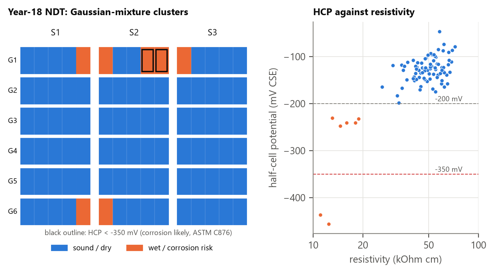
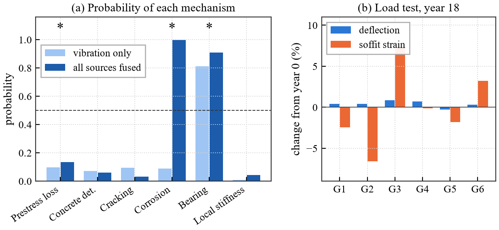
The Mahalanobis distance of the year-18 campaign is 186, against a threshold of 6.9, so the bridge is clearly no longer in its healthy state. Most of the distance comes from inspection features that are always zero on the healthy bridge, such as rust stains, but even without them the distance would be 35, about five times the threshold. The models using all sources give corrosion a probability of 1.00 and bearing deterioration 0.91. Loss of prestress receives only 0.13, which is to be expected for a loss of a few per cent in one girder: early losses of this kind are the main remaining error of the classifier (Section 13.2), so the size of the loss was estimated separately. The models using vibration only give bearing deterioration 0.81 and every other mechanism less than 0.1; they find the bearings, which stiffen the span, and nothing else. The localisation model points to G1, with a probability of 0.52.
The estimate of the prestress loss needed more care. My first version of the Gaussian-process model, which used the largest crack width of any type as an input, gave 18 % for this campaign. It had been misled by the 0.45 mm rust-stained splitting cracks at the joint end: in its training data a visible crack on a girder almost always meant a flexural crack, and flexural cracks appear only after a loss of about 25 %. The crack feature was then split into flexural cracks and cracks along bars or ducts, and the model was retrained. It now gives 9.5 ± 6.3 % (95 % band), and its error on the test set also became smaller. Because the levels and the VW strain changed mainly in G1, the G1 measurements were also inverted directly with the sensitivities of Eq. (15), which gives 4.4 ± 3.2 % for G1 (levelling 2.3 %, VW strain 5.8 %). The two estimates overlap. The direct estimate for G1 was used in the structural check, because it rests on two measurements whose physics is clear, and the Gaussian-process value was kept as an upper indication.
The result also makes physical sense. A leaking joint explains the bearing distress in both spans next to it, the wet concrete and low resistivity at the girder ends, and, through the anchorages at that end, a possible loss of prestress in G1. The slight rise of f1 fits restrained bearings. The absence of any change in UPV and rebound rules out a problem with the concrete. The load-test deflections changed by less than 1 % in every girder, which is consistent with a girder that has lost some precompression but has not cracked. The output of the models is therefore consistent with one cause, the joint, and three consequences. What it cannot show is whether the strands inside the ducts near the G1 anchorage are corroding; only an investigation of the tendons can show that, so one has to be included in the maintenance scheme.
With the estimated loss in G1 (4.4 %), the margin of the soffit stress against cracking under the rare combination becomes +0.09 MPa on the design basis (0.9Pm) and +2.33 MPa with the mean prestress, and the soffit stress under the quasi-permanent combination is still +4.6 MPa compression. The flexural capacity at mid-span is not affected by a loss of force, since the strands yield at failure anyway, and MEd/MRd remains 0.76. At the corroded end B of G1 the vertical component of the prestress decreases, and the net design shear 2.75 m from the bearing rises from 690 to 757 kN, still below VRd,max = 1333 kN and covered by the links provided. The girder is therefore safe at present, but it is close to losing its design margin against cracking, and its condition will become worse if water continues to reach the anchorage.
The history used to generate the data was: failure of the joint seal over pier P2 in year 9; restraint of the bearings at end B (shear stiffness ×100) with slight hardening at end A, from year 10; corrosion of G1 at end B between 28.5 and 33.0 m with a strand area loss of 8.4 %, from year 11; an extra loss of prestress in G1 that grew with the corrosion to 6.3 %. The assessment found all three mechanisms and their common cause, located them correctly, and estimated the loss of prestress in G1 within its stated uncertainty. It could not measure the corrosion of the strands inside the ducts, but it showed where this has to be investigated.
The maintenance decision combines all the available information: visual inspection, NDT, structural response measurement, vibration monitoring and the AI/ML assessment. In this scheme the AI/ML output is one line of evidence among several. An action is triggered by the evidence itself (a crack, a potential map, a bearing that does not move), and the AI/ML result mainly sets the priority and indicates what should be checked next. For example, a probability of 0.8 for 'loss of prestress' leads to a measurement of the remaining force, and not directly to strengthening of the girder.
The decision follows the sequence condition assessment → routine monitoring or detailed investigation → maintenance or repair → reinspection and monitoring. If no monitoring alarm is raised and no defect is worse than CS2, the bridge stays under routine monitoring. Otherwise a detailed investigation follows (special inspection, targeted NDT, structural assessment), then maintenance or repair, in which the cause is removed before the damage is repaired, and finally reinspection and a new baseline. The evidence patterns used to choose the actions are summarised in Table 25.
| Evidence | Interpretation | Action |
|---|---|---|
| All sources within baseline, CS <= 2 | healthy, normal ageing | routine inspection and monitoring |
| Frequency residual alarm only, nothing else | environment / mass / traffic effect or early stiffness loss | check temperature model and records, repeat in 1 month; do not act on frequency alone |
| Frequency rise + bearing movement drop | bearing restraint (seizure / debris) | inspect bearings and joint, clean, replace |
| Level sag + VW tension, no cracks | prestress loss beyond the creep prediction | lift-off / stress release test, assessment |
| Level sag + load-test softening + flexural cracks | decompression lost, girder cracked | assessment, load management, external PT |
| HCP < -350 mV + low resistivity + carbonation at cover | active corrosion of links / bars | patch repair, coating, inhibitor |
| Corrosion signs near anchorages / joint ends | possible strand corrosion in ducts | GPR + impact-echo + borescope, assessment |
| Low UPV + low rebound over a zone | concrete deterioration / honeycombing | cores, petrography, repair or encasement |
| Local deflection / strain jump at one girder + spalling | local stiffness loss (impact, delamination) | special inspection, repair |
The assessment places the bridge in the category serious (detailed investigation). The plan in Table 26 starts with a special inspection and with removing the cause, the water at the joint over pier P2. The tendons and the remaining prestress are then measured, since the monitoring can only infer them, before the damage is repaired. Finally a new baseline is established so that the repaired bridge is again compared with itself. The actions are listed in the order in which they are to be started.
| Action | When | Reason |
|---|---|---|
| Special inspection by a bridge engineer (under-bridge unit, close visual of all girders) | within 2 weeks | serious defect or monitoring alarm |
| Clean and extend drainage spouts | within 1 month | blocked or short drain spouts wetting the outer girder (inspection) |
| Additional instrumentation: crack gauges, extra VW gauges at the end zone, bearing LVDTs on all girders | within 1 month | 6 monitored quantities in alarm (EWMA charts) |
| Replace the strip seals of the torn expansion joints | within 3 months | expansion joint seals torn and leaking (inspection) |
| Tendon investigation: GPR to locate ducts, impact-echo for voids, borescope through drilled ports at anchorages | within 3 months | corrosion near the tendon anchorages; probability of corrosion from the models 1.00 |
| Prestress check: lift-off or saw-cut (stress-release) test on the suspect girder | within 3 months | estimated extra loss of prestress in G1 4.4 ± 3.2 %; trend alarms on VW strain G1, level G1 |
| Detailed structural assessment with the measured force (SLS decompression, ULS, shear at the end zone) | within 4 months | soffit margin against cracking only +0.09 MPa (rare combination) with the estimated loss |
| Jack deck and replace / reset bearings | within 6 months | practically no bearing movement at one end; bearing distress seen at inspection |
| Concrete repair: remove carbonated / delaminated cover, treat bars, polymer-modified mortar | within 6 months | HCP down to -456 mV and resistivity down to 11 kΩcm; spalling and rust (NDT, inspection) |
| Migrating corrosion inhibitor on wet, low-resistivity zones | with repair | wet zones with potentials in the uncertain band |
| Anti-carbonation coating on repaired and low-cover zones | after repair | zones with low cover |
| Epoxy injection of cracks wider than 0.2 mm, sealing of finer cracks | within 6 months | crack width 0.45 mm |
| Re-inspection and repeat monitoring campaign after the works | 6 months after works | to confirm the effect of the works and set a new baseline |
The drains and the joint come first, because every other defect found is a consequence of water; repairing the concrete or the bearings while the joint still leaks would waste the repair. The seal of the joint over pier P1, which is also torn and next to which the NDT clustering found wet girder ends, is replaced at the same time. The bearings of S2 at end B, and of S3 at end A under the same joint, are replaced by lifting each span on jacks placed under the end diaphragm, which was designed as a jacking beam; the lift is limited to 10 mm and the joint is closed to traffic for one night per span. Concrete repair at the G1 end zone and on the pier cap follows the half-cell map, after cores have given the chloride content and the carbonation depth at the level of the steel, with an anti-carbonation coating on the repaired and low-cover areas and a migrating corrosion inhibitor where the potentials are in the uncertain range.
The investigation of the tendons (GPR to locate the ducts, impact-echo along them, and a borescope through a small hole drilled at the anchorage and at the high points of the ducts) and a lift-off or stress-release test on G1 decide the last step. If the measured force confirms a loss that removes the margin against cracking, external post-tensioning restores it, with two straight 12T15 tendons per girder, deviators at the mid-span cross girder and anchorages on the end diaphragms (IRC:SP:40). If not, the girder is kept under closer monitoring.
Until the works are complete, routine inspection is carried out monthly and the monitoring data are reviewed weekly. A principal inspection follows the works and is repeated after one year. Crack gauges, two additional VW gauges at the end zone of G1 and bearing transducers on all girders of S2 are installed at once and kept for at least two years after the repair. After the works the commissioning tests of Chapter 5 are repeated (ambient vibration test, load test, NDT of the repaired zones) and become the new baseline. The bridge returns to the routine regime (routine inspection before and after the monsoon, principal inspection every three years and quarterly review of the monitoring data) when two years of data after the repair remain within the new limits.
Each of the four expansion joints is a possible source of water. When the joint between S2 and S3 is replaced, a continuity (link) slab over the piers should be considered, which would leave only the two joints at the abutments. The drain spouts of all spans should be extended at least 100 mm below the soffit of the girders and given a drip groove; this costs little and removes the second source of wetting found in this assessment.
The results were checked at three levels. The grillage model was first compared with simple beam results under a uniform load (Section 3.4). In addition, 20 of the computed results were checked independently with simpler methods: hand formulas, a separate influence-line calculation, Courbon's method, the frequency formula for a simply supported beam, and recovery of known parameters from synthetic measurements. All 20 checks are within their tolerances (Appendix B). Finally, every intermediate result was compared with what could be expected from the physics or from practice, and the clauses of IRC:6 for the impact factor of the 70R vehicle, the footway load on spans over 30 m and the reduction for three loaded lanes were checked against the code.
These checks found the following errors in my first versions, all of which were corrected before the results in this report were produced:
| Item | Result |
|---|---|
| Configuration | 33 m span; six 1.80 m deep M45 girders at 2.70 m; 225 mm deck slab; end diaphragms and one cross girder at mid-span |
| Live load on outer girder | 2426 kN m (grillage), 2457 kN m (Courbon) |
| Prestress | four 12T15 cables per girder, two-stage stressing; Pe = 7.17 MN, total loss 23.5 % |
| Serviceability and strength | rare-combination soffit stress -2.27 MPa (uncracked); MEd/MRd = 0.76; live-load deflection 11.8 mm |
| Healthy baseline | f1 = 3.74 Hz, f2 = 3.93 Hz at 25 °C; -0.15 %/°C; load-test deflection 6.31 mm |
| AI/ML (test set) | macro-F1 0.32 with vibration only, 0.90 with all sources; prestress loss estimated with MAE 2.6 % |
| Year-18 assessment | BCI 38; category serious (detailed investigation); leaking joint over pier P2 causing restrained bearings, corrosion near the G1 anchorage and a loss of prestress of about 4 % in G1 |
The main conclusions of the study are:
The work could be extended by calibrating the noise models and the detection thresholds with data from an instrumented bridge, by replacing the grillage with a finite-element model that represents bond and crack behaviour, and by adding the cost of the actions so that the timing of maintenance can be optimised over the life of the bridge.
| File | Content |
|---|---|
| psc/inputs.py | all adopted dimensions, materials, loads and criteria |
| psc/section.py, grillage.py, vehicles.py | section properties; grillage model (static analysis, influence surfaces, modal analysis); IRC vehicles and the search for the worst position |
| psc/prestress.py, design.py | cable geometry, losses, stage stresses, ULS, shear, bearings, comparison of girder arrangements |
| psc/twin.py, dynamics.py | digital twin (deterioration state to responses); vibration simulation; FDD and modal-filter identification |
| psc/condition.py, scenarios.py, features.py | inspection and NDT models; deterioration scenarios; generation of campaigns; feature extraction |
| psc/mlkit.py, maintenance.py | machine-learning methods written with numpy and scipy; decision rules |
| run_01_design.py to run_05_case_study.py | the five steps of the study, run in this order |
| verify.py | independent checks (Appendix B) |
| make_figures.py, make_figures_ml.py | figures |
| build_report.py, report_lib.py | this report (written as HTML and printed to PDF) |
| inspection_app/index.html | digital visual inspection application (single file, works offline; built by build_app.py) |
| out/data/*.csv | baseline year, scenario library, NDT surveys, visual inspection, 18-year monitoring record |
The programs need Python 3 with numpy, scipy and matplotlib; pymupdf and Edge or Chrome are used only to print the report. The five
run_*.py scripts are run in order, followed by verify.py, make_figures.py and build_report.py.
The complete chain takes about ten minutes on my laptop (16 threads), most of it for the 3600 vibration records of the scenario library.
| Check | Computed | Independent | Difference | Tolerance | Result |
|---|---|---|---|---|---|
| precast girder area: section routine vs sum of five pieces | 0.855 m² | 0.855 | 0.0 % | 0.1 % | pass |
| precast girder centroid height (tapers taken at mid-height) | 0.912 m | 0.9131 | 0.1 % | 1 % | pass |
| 10 kN/m on every girder: sum of mid-span moments vs 6wL²/8 | 8,149 kN m | 8,168 | 0.2 % | 1 % | pass |
| 10 kN/m on every girder: inner girder deflection vs 5wL⁴/384EI + bearing | 6.782 mm | 6.792 | 0.1 % | 3 % | pass |
| G1 live-load moment: grillage vs Courbon (Courbon valid here: L/B = 2.06, stiff cross girders) | 2,426 kN m | 2,457 | 1.2 % | 5 % | pass |
| Class A train, maximum mid-span moment vs influence line by hand | 3,172 kN m | 3,172 | 0.0 % | 0.2 % | pass |
| cable C3, force after friction at mid-span vs exp(−(μθ + kx)) | 2,220 kN | 2,220 | 0.0 % | 0.2 % | pass |
| total elastic shortening loss at mid-span (hand: (n − 1)/2n rule, mean age 20 days) | 370.3 kN | 355 | 4.3 % | 25 % | pass |
| G1 soffit stress, quasi-permanent, 0.9Pm: P/A + Pe/Z − M/Z | 3.319 MPa | 3.365 | 1.4 % | 5 % | pass |
| G1 moment of resistance vs yielding strands × lever arm | 16,468 kN m | 16,491 | 0.1 % | 1 % | pass |
| bearing movement per °C vs αL/2 | 0.1924 mm/°C | 0.198 | 2.8 % | 5 % | pass |
| f1 of the twin vs simply supported beam formula (beam ignores end blocks, cross girders and bearing flexibility) | 3.741 Hz | 3.842 | 2.6 % | 4 % | pass |
| level change for 10 % prestress loss (hand: 10 % of the elastic camber due to Pe × (1 + χφ)) | 10.38 mm | 10.25 | 1.3 % | 15 % | pass |
| VW strain change for 10 % prestress loss | 123.9 με | 123.9 | 0.0 % | 2 % | pass |
| identified f1 from a simulated 30 min record | 3.752 Hz | 3.741 | 0.3 % | 0.4 % | pass |
| identified f3 from a simulated 30 min record | 8.837 Hz | 8.815 | 0.3 % | 0.4 % | pass |
| model updating: modulus factor vs value used to make the data | 1.055 | 1.06 | 0.5 % | 6 % | pass |
| model updating: share of barrier stiffness vs value used to make the data | 0.3598 | 0.35 | 2.8 % | 6 % | pass |
| model updating: dynamic / static modulus vs value used to make the data | 1.245 | 1.24 | 0.4 % | 6 % | pass |
| novelty detector, false-alarm rate on healthy test data vs design value (99 % threshold from training data; small test sample) | 3.3 % | 1 % | 2.3 points | 3 points | pass |